โปรเจกต์ที่ทำเรื่องเดียวกัน (automate แชท LINE OA, MCP ที่ทำงานในนามผู้ใช้จริง, ระบบรวมแชท) ลองติดตั้ง ถ่ายภาพ สรุป feature และ flow แล้วให้คะแนน
สร้างจาก test/research/data/*.json ด้วย tools/build.py · ข้อมูล ณ 2026-11-05
file_type: image/audio/video/file/location/fallback) และ ContactInbox| เรื่อง | จะทำอะไร | ได้มาจาก |
|---|---|---|
| ส่งซ้ำ | ถ้าไม่แน่ใจว่าส่งสำเร็จหรือไม่ ห้ามส่งซ้ำอัตโนมัติ ให้ตรวจจาก sendId ในประวัติแชทก่อน (idempotency) | omnichat-bridge |
| ขนาดไฟล์ | เกณฑ์ตอนส่ง: รูป 20 MiB · วิดีโอ/ไฟล์ 32 MiB (ยังต้องยืนยันจาก HAR) · ตรวจ MIME จริง ไม่ส่งเป็น application/octet-stream ทุกไฟล์ | omnichat-bridge, LINELib (ตัวอย่างที่ไม่ควรทำ) |
| ดาวน์โหลดไฟล์ | เขียนลงไฟล์ temp แล้วค่อยย้าย (atomic) และมี allowlist นามสกุลไฟล์ต่อ tool | telegram-mcp |
| Cookie | ส่ง cookie เฉพาะโดเมนใน allowlist (*.line.biz) · redact header ลับใน log · ใช้ error AUTH_EXPIRED แยกจาก FORBIDDEN · refresh CSRF แล้วลองใหม่ได้แค่ครั้งเดียว | linebiz |
| Session | lock file กันไม่ให้ server สองตัวใช้ session เดียวกัน · ไม่ขอ login ผ่าน stdio (login เป็น CLI แยก) | telegram-mcp, LINELib |
| Search index | ใช้ /download/{bot}/{chat}/messages.csv ดึงประวัติทั้งห้องรวดเดียวมาเติม index (เร็วกว่าไล่ทีละหน้า) | propertyos-line-importer |
| Profile | get_user_profile ดึง notes, tags และ owners (ผู้รับผิดชอบ) มาด้วย | propertyos-line-importer |
| Domain model | แยก Contact กับ id ของช่องทาง (source_id) · มี message ชนิด activity/system · ข้อความที่ไม่รองรับต้องเป็น placeholder ไม่ทิ้งเงียบ ๆ | Chatwoot, respond.io, SleekFlow |
| Mock server | bind แค่ 127.0.0.1 (bridge ของ whatsapp-mcp เปิด REST ให้ทุก interface โดยไม่มี auth) | whatsapp-mcp (ตัวอย่างที่ไม่ควรทำ) |
| Dependency | pin major version ของ MCP SDK (whatsapp-mcp ติดตั้งไม่ขึ้นเพราะ mcp 2.x ไม่มี fastmcp แล้ว) | whatsapp-mcp |
ทั้งหมดเป็น SaaS ปิด ไม่มีบัญชีทดลอง จึงอ่านจากเอกสารสาธารณะเป็นหลัก ตัวที่ได้รันจริงมีตัวเดียวคือ zendesk-mcp-server ของชุมชน (pytest)
| เรื่อง | สิ่งที่ได้ | ได้มาจาก |
|---|---|---|
| ยืนยันแนวทาง | inbox ที่รองรับ LINE (Zendesk, Freshchat) ต่อผ่าน Messaging API webhook ทั้งหมด Zendesk ต้องตั้ง Response mode เป็น Bot ด้วย จึงอ่านประวัติเก่าที่ CS เห็นในหน้าเว็บไม่ได้ เหตุผลที่เราใช้ session ของหน้าเว็บจึงยังหนักแน่น | Zendesk, Freshchat |
| ขอบเขต tool | MCP ทางการของ Intercom เน้นอ่าน มี tool เขียนตัวเดียวคือ internal note ไม่ส่งหาลูกค้า สอดคล้องกับแนวทางของเราที่ปิดการส่งเป็นค่าเริ่มต้น (LINEOA_ALLOW_SEND) | Intercom MCP |
| ไฟล์แนบ | tool รูปของ zendesk-mcp-server ใช้ allowlist MIME, ตรวจ magic bytes, จำกัดขนาดระหว่าง stream (10 MB) และไม่ส่ง Authorization ต่อไปยัง CDN ภายนอก ตรงกับ PLAN §7 ส่วน Freshchat มีสถานะสแกนไวรัส (file_security_status) ไว้ใช้เป็นไอเดีย | Zendesk, Freshchat |
| ข้อจำกัดของ LINE | Freshchat ส่งรูปและวิดีโอได้สองทาง แต่ไฟล์รับได้อย่างเดียว ต้องยืนยันใน HAR ว่าหน้าเว็บ chat.line.biz ส่งไฟล์ (PDF) ได้จริงผ่าน bulkSendFiles | Freshchat |
| ตลาดไทย | ChatCone มีระบบตรวจสลิป OHO Chat มี AI ร่างคำตอบ (ยังไม่ยืนยันจากเว็บของ OHO เอง) ทั้งสองเจ้าไม่บอกวิธีต่อ LINE หรือการนำเข้าประวัติเก่า | ChatCone, OHO Chat |
หมายเหตุ: ทุกอย่างที่เกี่ยวกับ chat.line.biz อ่านจาก source code ของ repo เหล่านี้ ยังไม่ได้ทดสอบกับบัญชีจริง (ไม่มีบัญชี) ต้องยืนยันด้วย HAR ใน Phase 4
กดที่ชื่อโปรเจกต์เพื่อไปที่รายละเอียด ข้อความบนเส้นคือสิ่งที่ยืมมาใช้กับ lineoa-mcp
คะแนนแต่ละเกณฑ์ 1-5 · น้ำหนัก: ตรงโจทย์ 30% · Auth 20% · ไฟล์แนบ 15% · ความพร้อม 15% · ความนิยม 10% · ลองได้จริง 10% · ความนิยมคำนวณจาก GitHub stars (<10=1, <100=2, <1k=3, <10k=4, ≥10k=5) ถ้าไม่มี repo น้ำหนักจะถูกกระจายให้เกณฑ์อื่น · คะแนนรวม = ค่าเฉลี่ยถ่วงน้ำหนักของ (คะแนน-1)/4 × 100
| # | โปรเจกต์ | ตรงโจทย์ 30% | Auth 20% | ไฟล์แนบ 15% | ความพร้อม 15% | ความนิยม 10% | ลองได้จริง 10% | รวม (0-100) |
|---|---|---|---|---|---|---|---|---|
| 1 | chigwell/telegram-mcp MCP ที่ใช้ session ของผู้ใช้จริง | 4 | 5 | 5 | 4 | 4 | 3 | 81 |
| 2 | korotovsky/slack-mcp-server MCP ที่ใช้ session ของผู้ใช้จริง | 4 | 4 | 5 | 4 | 4 | 2 | 74 |
| 3 | Madoa5561/LINELib LINE OA: client ที่ยิง internal API | 5 | 4 | 4 | 3 | 2 | 3 | 71 |
| 4 | chatwoot/chatwoot ระบบรวมแชทแบบโอเพนซอร์ส | 4 | 2 | 4 | 5 | 5 | 2 | 66 |
| 5 | kaojai-ai/omnichat-bridge LINE OA: extension / script ใน browser | 5 | 4 | 4 | 3 | 1 | 2 | 66 |
| 6 | Beeper Desktop MCP (@beeper/desktop-mcp) MCP ทางการ / ของผลิตภัณฑ์ | 4 | 4 | 4 | 3 | 2 | 3 | 64 |
| 7 | Zendesk (Agent Workspace / Messaging) ระบบรวมแชทแบบ SaaS | 3 | 3 | 4 | 5 | — | 2 | 60 |
| 8 | PrakritManStudio/linebiz LINE OA: client ที่ยิง internal API | 4 | 4 | 2 | 3 | 1 | 3 | 54 |
| 9 | lharries/whatsapp-mcp MCP ที่ใช้ session ของผู้ใช้จริง | 3 | 3 | 3 | 3 | 4 | 3 | 52 |
| 10 | respond.io ระบบรวมแชทแบบ SaaS | 4 | 1 | 4 | 4 | — | 1 | 50 |
| 11 | Freshworks Freshchat ระบบรวมแชทแบบ SaaS | 3 | 2 | 3 | 5 | — | 1 | 47 |
| 12 | SleekFlow ระบบรวมแชทแบบ SaaS | 4 | 1 | 3 | 4 | — | 1 | 46 |
| 13 | Intercom MCP (remote, official) MCP ทางการ / ของผลิตภัณฑ์ | 3 | 4 | 1 | 4 | 1 | 2 | 44 |
| 14 | zimplemedia/propertyos-line-importer LINE OA: extension / script ใน browser | 3 | 4 | 1 | 3 | 1 | 2 | 40 |
| 15 | xiaoxigua-1/line-bot-chat-history-downloader LINE OA: extension / script ใน browser | 3 | 3 | 4 | 1 | 1 | 2 | 39 |
| 16 | Oho Chat (โอ้โหแชท) ระบบรวมแชทแบบ SaaS | 3 | 2 | 2 | 4 | — | 1 | 39 |
| 17 | hugoblanc/chatwoot-mcp MCP ทางการ / ของผลิตภัณฑ์ | 3 | 2 | 1 | 2 | 2 | 5 | 36 |
| 18 | Zwiz.ai ระบบรวมแชทแบบ SaaS | 3 | 1 | 2 | 4 | — | 1 | 33 |
| 19 | line/line-bot-mcp-server MCP ทางการ / ของผลิตภัณฑ์ | 1 | 1 | 1 | 5 | 3 | 5 | 30 |
| 20 | Chatcone (Clicknext) ระบบรวมแชทแบบ SaaS | 3 | 1 | 2 | 3 | — | 1 | 29 |
| 21 | Page365 ระบบรวมแชทแบบ SaaS | 3 | 1 | 1 | 4 | — | 1 | 29 |
| 22 | Trengo ระบบรวมแชทแบบ SaaS | 2 | 2 | 1 | 4 | — | 1 | 26 |
| 23 | tatsuyasusukida/line-friend-export-v2 LINE OA: client ที่ยิง internal API | 2 | 2 | 1 | 1 | 1 | 2 | 15 |
แกนเป็น log scale เพราะค่าห่างกันหลายหลัก ค่าตัวเลขอยู่ในตารางและในแต่ละโปรเจกต์ ชี้ที่แท่งเพื่อดู fork และวันที่ push ล่าสุด · stars ไม่เท่ากับจำนวนคนใช้จริง แต่เป็นตัวแทนที่หาได้
tools/AGENT_BRIEF.md (รอบ 4 เพิ่มอีก 6 ตัวด้วย agent อีก 2 ตัว brief เดิม)_vendor/ (gitignore ไว้แล้ว) ติดตั้งแบบ --ignore-scripts ใช้ credential ปลอมเท่านั้น และไม่ส่งข้อความไปที่บริการจริงใด ๆtrials/<slug>.mdMCP Telegram ที่ใช้ Telethon user session พร้อม guard บัญชี, read-only mode, allowed roots
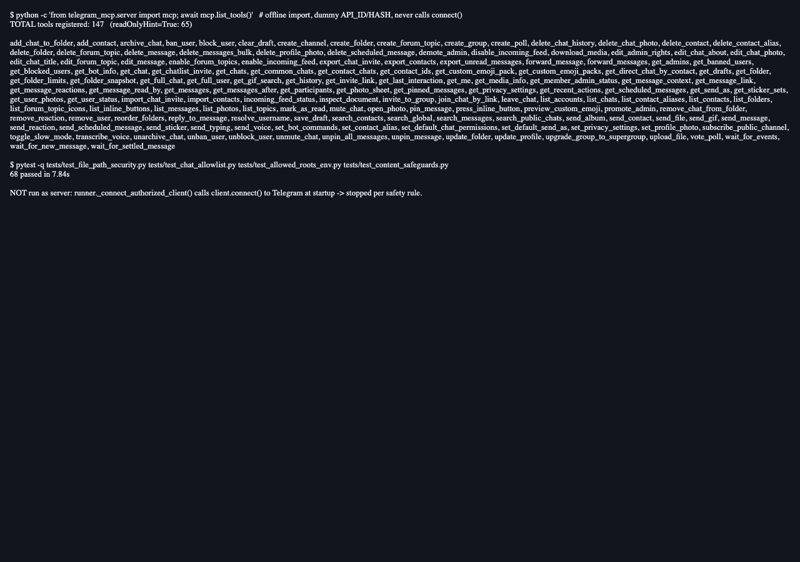
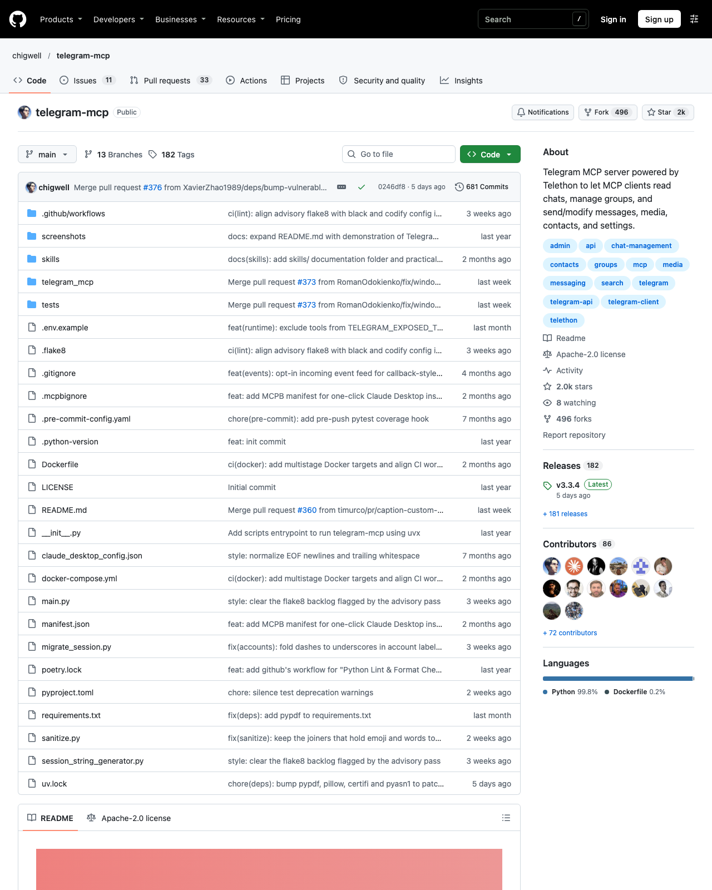
ใช้ API_ID/API_HASH จาก my.telegram.org + session ของผู้ใช้จริง สร้างนอก MCP ด้วย session_string_generator.py (login ด้วยเบอร์โทร+รหัส+2FA หรือ --qr) ได้ StringSession. server ไม่ถาม login แบบ interactive (stdio) ถ้าไม่ authorized จะ error. ตอนสตาร์ท connect() แล้วเช็ก is_user_authorized และ TELEGRAM_EXPECTED_USERNAME (ไม่ตรง = disconnect และปฏิเสธเริ่ม); มี per-session lock กัน instance ซ้ำ, session pool, หลายบัญชีด้วย label
เก็บที่: TELEGRAM_SESSION_STRING ใน .env หรือไฟล์ .session ของ Telethon; ไฟล์ aliases/transcript cache chmod 600; ตั้งชื่ออุปกรณ์ได้ (TELEGRAM_DEVICE_MODEL) ให้เห็นใน Settings > Devices
เอามาใช้: ควรเลียนแบบ: guard 'ล็อกอินเป็นบัญชีที่คาดไว้เท่านั้น' ก่อนให้ใช้งาน, สร้าง session นอก MCP server, lock กัน instance ซ้ำ, ไม่ prompt login ใน stdio. ควรหลีกเลี่ยง: session string ใน .env เป็น plaintext ที่ให้สิทธิ์เต็มบัญชี
download_media ดาวน์โหลดลง temp dir แล้ว os.replace ไปยังพาธที่ผ่านการตรวจใน allowed roots (ค่าเริ่มต้น <root>/downloads/; ไม่มี root = deny-all); จำกัด 200MB (เช็ก declared size + progress callback + ขนาดจริง) คืนข้อความ 'Media downloaded to <path>'. inspect_document อ่านในหน่วยความจำ: PDF คืนข้อความ (pypdf) รูปคืน Image(jpeg/png ตามที่ Claude รับ) ไม่ลงดิสก์; open_photo/get_photo_sheet คืน Image. ขาส่ง send_file/upload_file/send_voice/send_sticker มี limit ขนาดต่อ tool + allowlist นามสกุลไฟล์ (TELEGRAM_FILE_EXTENSIONS) + ตรวจพาธใต้ allowed roots
เอามาใช้: ควรเลียนแบบมาก: allowed-roots sandbox แบบ deny-all, ดาวน์โหลดผ่าน temp แล้วย้าย (atomic), limit ขนาดหลายชั้น, allowlist นามสกุลต่อ tool, tool อ่านในหน่วยความจำคืน Image/ข้อความให้ LLM, เตือนว่าเนื้อหารูปเป็น untrusted (prompt injection)
ติดตั้งด้วย uv venv. ไม่รัน server เพราะ runner เรียก client.connect() ไปยัง Telegram ตอนสตาร์ท (ตามกฎ: หยุดและบันทึก). แทนด้วย import offline ด้วย env ปลอมแล้ว mcp.list_tools() ได้ 147 tools (read-only 65) และรัน pytest ส่วน file-path/allowlist/content-safeguard ผ่าน 68 เคส ไม่มีการเชื่อมต่อเครือข่าย. TELEGRAM_EXPOSED_TOOLS=read-only ไม่ได้ลดรายการตอน import (ไม่ได้ยืนยันว่าบังคับใช้ตอนไหน) ดู log คำสั่งและผลลัพธ์จริง
list_chatsget_chatsget_chatget_messageslist_messagesget_historyget_messages_afterget_message_contextsearch_messagessearch_globalsend_messagereply_to_messageedit_messagedelete_messageforward_messagesend_filesend_albumsend_voiceupload_filedownload_mediaget_media_infoinspect_documentopen_photolist_photosget_photo_sheettranscribe_voiceget_melist_accountsresolve_usernamemark_as_readwait_for_new_messagewait_for_eventsenable_incoming_feedexport_unread_messagesget_direct_chat_by_contactget_contact_chatsget_last_interactionsearch_contactslist_contactsget_user_statusMCP Slack ที่ใช้ browser token (xoxc/xoxd) ไม่ต้องสร้าง bot; ส่งข้อความปิดไว้เป็นค่าเริ่มต้น
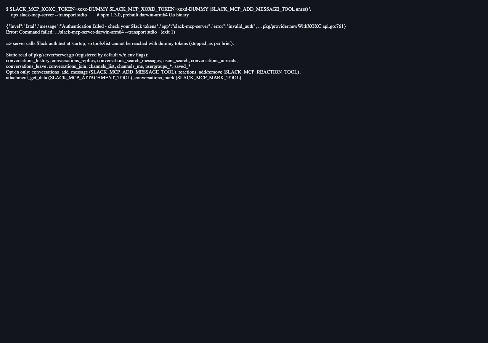
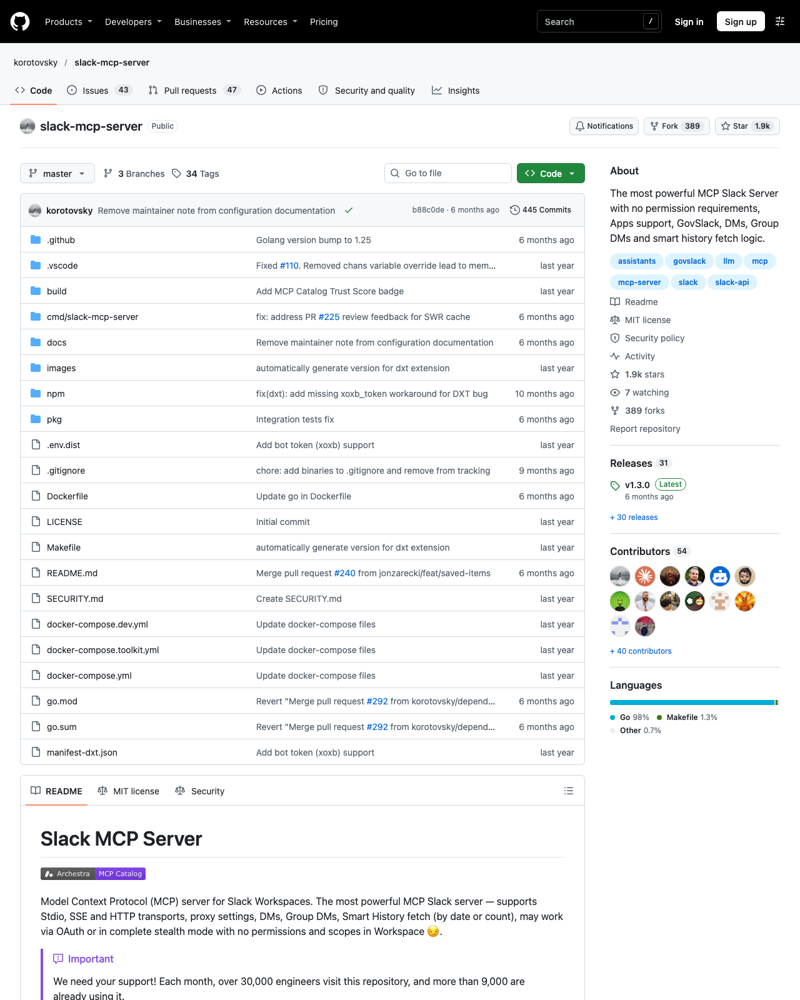
ผู้ใช้คัดลอก xoxc token และ cookie xoxd จาก browser ที่ล็อกอิน Slack อยู่ (หรือใช้ xoxp/xoxb ทางการ) ใส่ env SLACK_MCP_XOXC_TOKEN / SLACK_MCP_XOXD_TOKEN. ตอนสตาร์ทเรียก auth.test ทันที ถ้า token ผิดจะ fatal invalid_auth แล้วจบ (ยืนยันจากการรันจริงด้วย token ปลอม). ถ้าเปิดโหมด SSE/HTTP ใช้ SLACK_MCP_API_KEY (Bearer, เทียบแบบ constant-time)
เก็บที่: token อยู่ใน environment variable (ไม่เก็บไฟล์); cache users/channels เป็น JSON ใน ~/Library/Caches/slack-mcp-server/
เอามาใช้: ควรเลียนแบบ: ใช้ session cookie ของมนุษย์แบบไม่ต้องขออนุมัติ admin, ตรวจ token ทันทีตอนสตาร์ท (fail fast), มี proxy/custom UA/TLS. ควรหลีกเลี่ยง: ต้องให้ผู้ใช้คัดลอก token มือ และไม่มีกลไก refresh/หมดอายุที่ชัดเจน
tool attachment_get_data (ต้องเปิดด้วย SLACK_MCP_ATTACHMENT_TOOL) ดาวน์โหลดไฟล์ตาม file ID; จำกัด 5 MB; ถ้าเป็น image/* คืนเป็น MCP image content (base64 + metadata) ให้ LLM เห็นตรงๆ; ถ้าเป็น text/csv/json คืนข้อความ, อย่างอื่นคืน base64 พร้อม encoding field. ในประวัติข้อความ attachment ปรากฏเป็น attachmentIDs/คอลัมน์ CSV
เอามาใช้: ควรเลียนแบบมาก: opt-in tool, จำกัดขนาด, แยกตามชนิด MIME (image เป็น image content, text เป็น text), คืนไบต์ผ่าน MCP โดยไม่ต้องเขียนลงดิสก์/ไม่ต้องมี filesystem ฝั่ง client. ข้อจำกัด: ไม่มี channel-level restriction สำหรับ attachment
พบ npm package slack-mcp-server 1.3.0 (binary darwin-arm64) ติดตั้งด้วย --ignore-scripts แล้วรันด้วย token ปลอม (xoxc-DUMMY/xoxd-DUMMY, ไม่ตั้ง ADD_MESSAGE_TOOL). เซิร์ฟเวอร์ยิง Slack auth.test ตอนสตาร์ทและ fatal invalid_auth จึงหยุด; รายชื่อ tool อ่านจาก source (pkg/server/server.go) ดู log คำสั่งและผลลัพธ์จริง
conversations_historyconversations_repliesconversations_add_messageconversations_search_messagesconversations_unreadsconversations_markconversations_leaveconversations_joinreactions_addreactions_removeattachment_get_datachannels_listchannels_meusers_searchusergroups_listusergroups_meusergroups_createusergroups_updateusergroups_users_updatesaved_listsaved_updatesaved_clear_completedไลบรารี Python (pkg lineoa) ล็อกอินและส่ง/อ่าน/อัปโหลด/SSE ผ่าน chat.line.biz
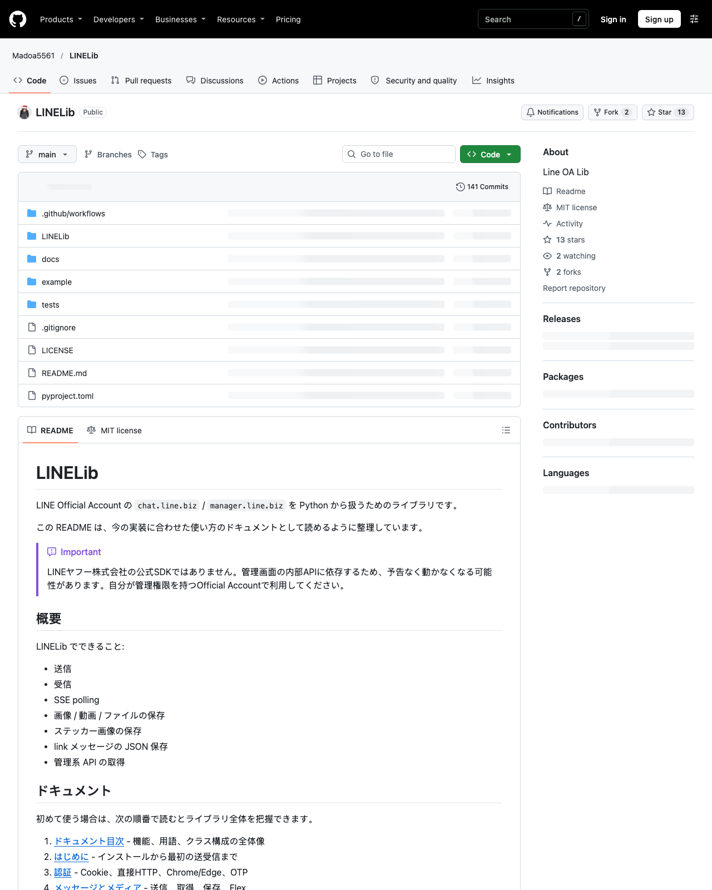
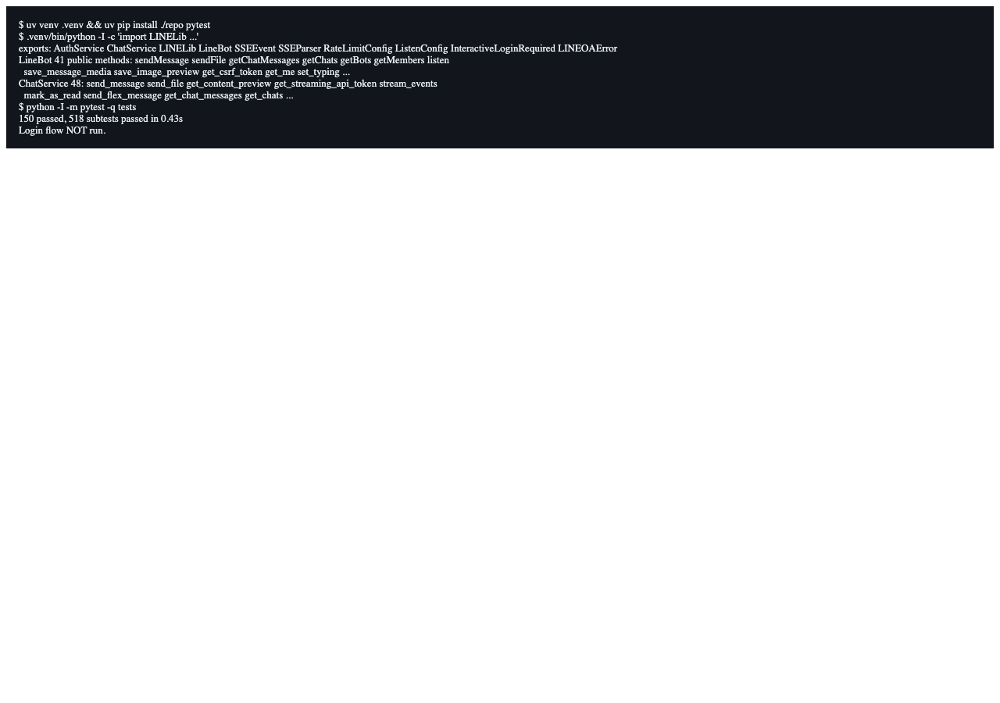
ลำดับ: ใช้ cookie ที่บันทึกไว้ (ตรวจโดยเปิด chat.line.biz จริง) -> ถ้าไม่ได้ interactive_login=True เปิด Chrome/Edge แบบเห็นหน้าจอด้วย Playwright ให้ผู้ใช้ผ่าน reCAPTCHA เอง -> ไม่งั้น HTTP ตรง POST account.line.biz/api/login/email (ถ้าต้อง captcha โยน InteractiveLoginRequired) -> OTP อีเมล 6 หลักผ่าน callback ที่ POST /api/verification/verify (resend ได้) -> GET /api/v1/csrfToken แล้วตั้ง cookie XSRF-TOKEN. ไม่ทำลาย captcha. Header ใช้ UA/sec-ch-ua ของ Chrome 151 บน Windows
เก็บที่: ไฟล์ JSON (cookie_path) เขียนแบบ atomic, chmod 0600, file lock (fcntl/msvcrt); เก็บเฉพาะ cookie *.line.biz (เช่น __Host-chat-ses, chat-device-group, XSRF-TOKEN) ไม่เก็บอีเมล/รหัสผ่าน; มีประวัติ rate-limit ในไฟล์เดียวกัน
เอามาใช้: ควรลอก: login ครบวงจร, reCAPTCHA fallback แบบคนทำเอง, ตรวจ cookie ว่ายังใช้ได้จริงก่อนใช้, ไฟล์ 0600+lock. ควรเลี่ยง: การเก็บ/ส่งรหัสผ่านใน library และ UA ปลอมเป็น Windows
อัปโหลด 2 ขั้น: POST /api/v1/bots/{bot}/messages/{chat}/uploadFile (multipart, ได้ contentMessageToken) แล้ว POST /api/v1/bots/{bot}/chats/{chat}/messages/bulkSendFiles ด้วย {items:[{sendId,contentMessageToken}]}. ดาวน์โหลด: GET chat-content.line.biz/bot/{bot}/{contentHash}/preview คืน bytes; SSE normalized_message สร้าง media_url ให้ image/video/file; มี save_message_media, สติกเกอร์จาก stickershop.line-scdn.net
เอามาใช้: ลอก flow อัปโหลด 2 ขั้นและ URL ดาวน์โหลดแบบ on-demand ตาม contentHash. ระวัง: ส่ง MIME เป็น application/octet-stream เสมอ และไม่เห็นการจำกัดขนาด/ชนิดไฟล์
uv venv + ติดตั้ง, import ด้วย python -I แล้วลิสต์ method สาธารณะ (LineBot 41, LINELib 56, ChatService 48), pytest 150 ข้อผ่าน. ไม่ได้รัน login/ไม่เรียก LINE ดู log คำสั่งและผลลัพธ์จริง
POST https://account.line.biz/api/login/emailPOST https://account.line.biz/api/verification/verifyPOST https://account.line.biz/api/verification/resendGET https://account.line.biz/oauth2/authorizeGET https://chat.line.biz/api/v1/csrfTokenGET https://chat.line.biz/api/v1/bots?limit=1000&noFilter=trueGET /api/v1/meGET /api/v2/bots/{bot_id}/chatsGET /api/v3/bots/{bot_id}/chats/{chat_id}/messagesPOST /api/v1/bots/{bot_id}/chats/{chat_id}/messages/sendPOST /api/v1/bots/{bot_id}/messages/{chat_id}/uploadFilePOST /api/v1/bots/{bot_id}/chats/{chat_id}/messages/bulkSendFilesPOST /api/v1/bots/{bot_id}/streamingApiTokenGET https://chat-streaming-api.line.biz/api/v2/sseGET https://chat-content.line.biz/bot/{bot_id}/{content_hash}/previewGET https://stickershop.line-scdn.net/stickershop/v1/sticker/{id}/android/sticker.pngcookies: __Host-chat-ses, chat-device-group, XSRF-TOKENheaders: X-XSRF-TOKEN, Origin, Referer, Sec-Fetch-*แพลตฟอร์ม omnichannel inbox โอเพนซอร์ส ทางเลือกแทน Intercom/Zendesk
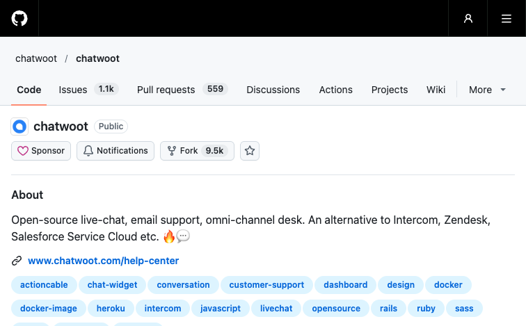
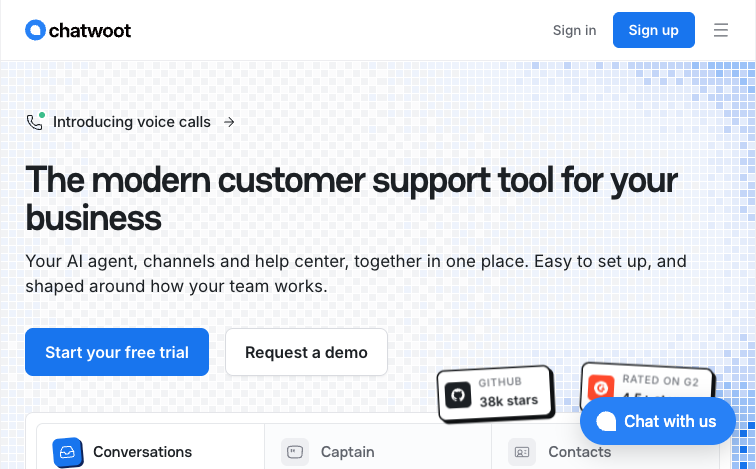
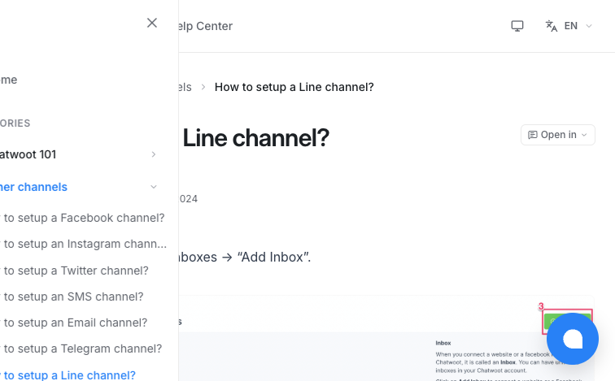
ผู้ใช้ agent ล็อกอินด้วย email+รหัสผ่าน (Devise) ส่วน channel LINE ใช้ line_channel_id/secret/token ของ Messaging API ทางการ
เก็บที่: ตาราง channel_line ในฐานข้อมูล Postgres; webhook ตรวจ signature ด้วย channel secret
เอามาใช้: ไม่ต้องลอก auth (เราห้ามใช้ Messaging API) แต่ควรแยก contact_inboxes.source_id (LINE userId) ออกจาก contacts
ตาราง attachments มี file_type enum (image/audio/video/file/location/fallback/share/story_mention/contact/ig_reel/ig_post/ig_story/embed), external_url, extension, meta; ไฟล์จริงเก็บด้วย ActiveStorage; ตรวจขนาดสูงสุด 40MB (ตั้งค่าได้) และ whitelist content-type; LINE incoming_message_service ดึงไฟล์จาก LINE content API แล้วแนบกับ message
เอามาใช้: คัดลอกชื่อ field และ enum file_type (เฉพาะ image/audio/video/file/location/fallback) ใช้เป็น domain type; copy แนวคิด 1 message : N attachments และ limit ขนาด+MIME whitelist
clone depth 1 แล้วอ่าน db/schema.rb และ app/models แบบ static (ไม่รัน Docker) สรุปคอลัมน์และ enum ไว้ใน log; ถ่ายภาพ GitHub, เว็บ, และ doc ตั้งค่า LINE ดู log คำสั่งและผลลัพธ์จริง
app/models/conversation.rbapp/models/message.rbapp/models/attachment.rbapp/models/contact.rbapp/models/contact_inbox.rbapp/models/channel/line.rbapp/services/line/incoming_message_service.rbapp/services/line/send_on_line_service.rbส่วนขยาย Chrome ของบริษัทไทย ดึงแชต LINE OA/Shopee ส่งเข้าเซิร์ฟเวอร์ และตอบกลับผ่านแท็บที่ล็อกอินอยู่
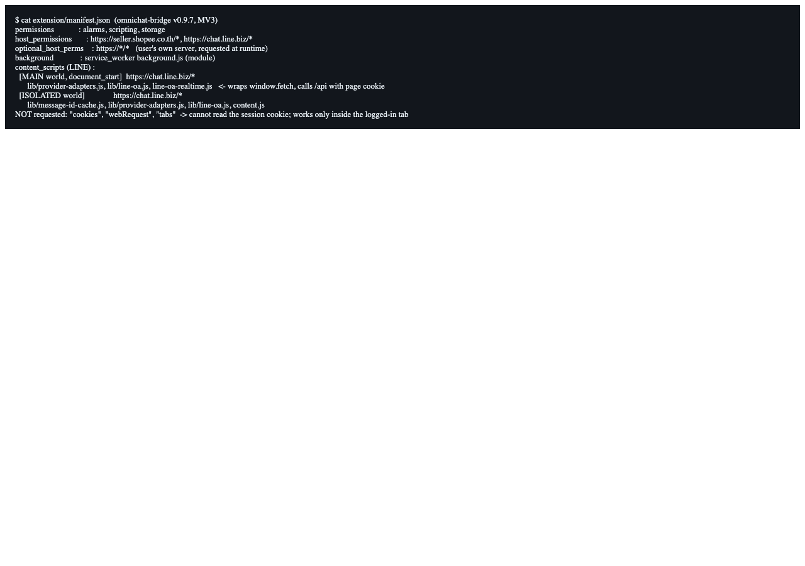
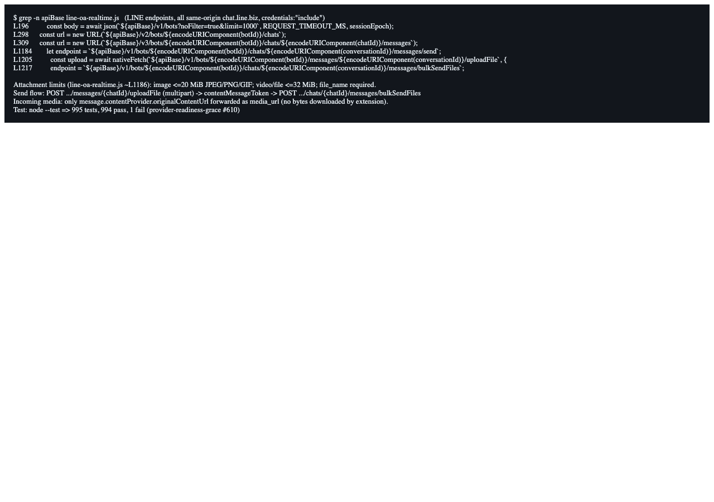
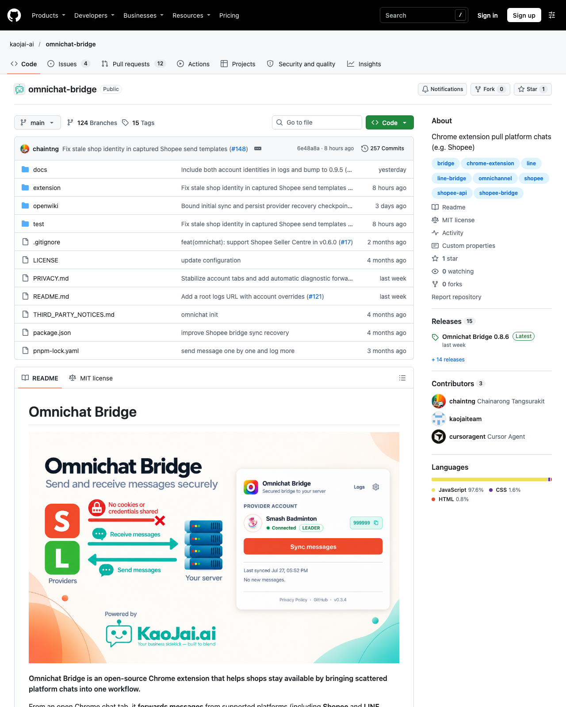
ไม่ล็อกอินเอง ใช้เซสชันคุกกี้ของผู้ใช้ที่เปิด chat.line.biz อยู่ content script (world MAIN) ครอบ window.fetch แล้วเรียก /api ด้วย credentials:include ไม่ขอสิทธิ์ cookies/webRequest/tabs จึงอ่านคุกกี้ไม่ได้ ตรวจ 401/403 เพื่อ invalidate สถานะ และมี health alarm ทุก 1 นาที
เก็บที่: ไม่เก็บคุกกี้ LINE; เก็บเฉพาะ config/hmac_secret ของเซิร์ฟเวอร์ปลายทางใน chrome.storage และเซ็นคำขอขาออกด้วย HMAC-SHA256 (method+path+timestamp+nonce+body hash)
เอามาใช้: ควรเลียนแบบ: รันโค้ดในหน้าเว็บที่ล็อกอินแล้ว ใช้ same-origin fetch, จับ 401/403 แล้วล้างสถานะ session epoch, ไม่แตะคุกกี้ ควรหลีกเลี่ยง: ต้องมีแท็บเปิดค้างและพึ่ง header x-oa-chat-client-version ที่ hardcode
ขาเข้า: ส่งต่อเฉพาะ contentProvider.originalContentUrl เป็น media_url (ไม่ดาวน์โหลดไบต์) สติกเกอร์สร้าง URL จาก stickershop CDN ขาออก: อัปโหลด multipart ไปที่ /messages/{chat}/uploadFile ได้ contentMessageToken แล้ว POST bulkSendFiles; จำกัดรูป 20 MiB (JPEG/PNG/GIF) วิดีโอ/ไฟล์ 32 MiB ตรวจ MIME และ deadline 25 วินาที ไม่ส่งซ้ำอัตโนมัติเมื่อผลไม่แน่ชัด
เอามาใช้: คัดลอกลำดับ uploadFile -> bulkSendFiles, ขีดจำกัดขนาด/MIME และกฎ 'ไม่ resend เมื่อไม่แน่ใจ' ตรวจยืนยันด้วย sendId จากประวัติ; ส่วนขาเข้าควรดาวน์โหลดแบบ on-demand เองเพราะ repo นี้ไม่ทำ
ติดตั้ง/รันกับ LINE จริงไม่ได้ (ไม่มีล็อกอิน) จึงทำ static trial: อ่าน manifest และ endpoint ทั้งหมด รัน node --test ได้ 995 เทสต์ ผ่าน 994 ล้ม 1 และแคปตารางสิทธิ์กับรายการ endpoint ดู log คำสั่งและผลลัพธ์จริง
GET /api/v1/bots?noFilter=true&limit=1000GET /api/v2/bots/{botId}/chats?folderType=ALL&limit&nextGET /api/v3/bots/{botId}/chats/{chatId}/messages?limit&backwardPOST /api/v1/bots/{botId}/chats/{chatId}/messages/sendPOST /api/v1/bots/{botId}/messages/{chatId}/uploadFilePOST /api/v1/bots/{botId}/chats/{chatId}/messages/bulkSendFilesheader x-oa-chat-client-version: 20240513144702MCP ในตัว Beeper Desktop คุยหลายแอปแชตผ่าน Desktop API ในเครื่อง
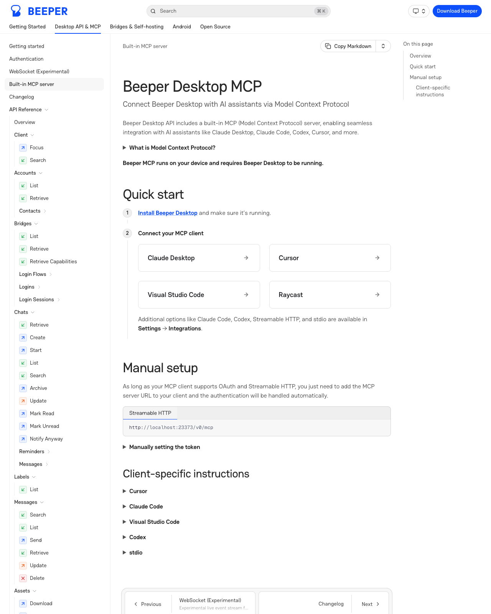
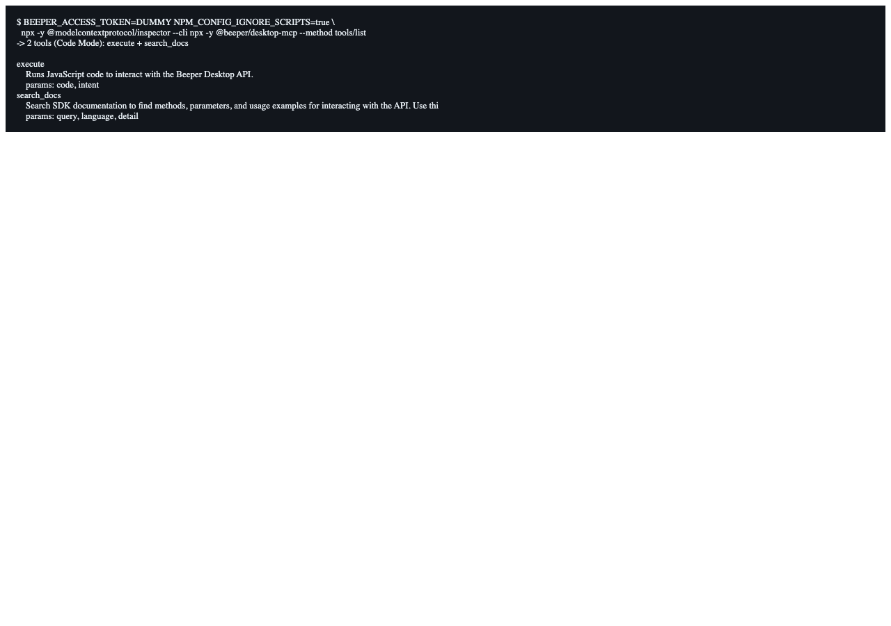
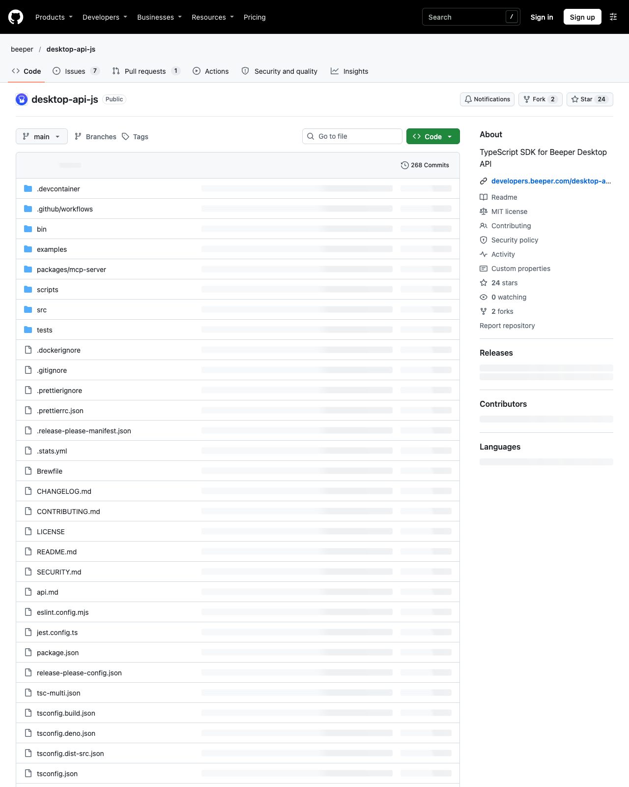
2 ทาง: OAuth (client MCP ที่รองรับ Streamable HTTP ที่ http://localhost:23373/v0/mcp ทำให้อัตโนมัติ) หรือ access token ที่สร้างเอง ส่งเป็น Authorization: Bearer / env BEEPER_ACCESS_TOKEN ซึ่งข้าม OAuth
เก็บที่: token อยู่ใน env/ header ของ client; บัญชีแชตจริงล็อกอินอยู่ในแอป Beeper Desktop ที่ต้องเปิดค้าง พอร์ต 23373 เฉพาะเครื่อง
เอามาใช้: ลอกแนวคิด: agent ไม่เคยเห็นรหัสผ่านแชต แอปที่ล็อกอินอยู่เป็นผู้ถือ session และ agent ถือแค่ token แคบๆ ของ local API; เหมาะกับแผน session ของเรา
มี asset API แยก: assets.download (mxc:// ลงดิสก์เครื่อง), assets.serve (stream), assets.upload / uploadBase64 (ได้ uploadID) แล้วแนบตอน messages.send ด้วย attachment.uploadID พร้อม type hint (image/video/audio/file/gif/voice-note/sticker)
เอามาใช้: ลอก pattern อัปโหลดสองขั้น (upload ได้ id แล้วอ้างตอนส่ง) และดาวน์โหลดตามต้องการ (on-demand) แทนการยัดไบนารีใน context
รัน inspector tools/list กับ npx @beeper/desktop-mcp ด้วย BEEPER_ACCESS_TOKEN=DUMMY ได้ 2 tools (execute, search_docs) ไม่ได้เรียก API จริงเพราะไม่มี Beeper Desktop; อ่านรายการ endpoint 60 รายการจาก api.md ของ SDK แบบ static ดู log คำสั่งและผลลัพธ์จริง
executesearch_docsGET /v1/chatsGET /v1/chats/searchGET /v1/chats/{chatID}/messagesGET /v1/messages/searchPOST /v1/chats/{chatID}/messagesGET /v1/accountsGET /v1/accounts/{accountID}/contactsPOST /v1/assets/downloadGET /v1/assets/servePOST /v1/assets/uploadPOST /v1/assets/upload/base64Inbox ซัพพอร์ตแบบ SaaS; LINE เป็น social messaging channel ใน Agent Workspace
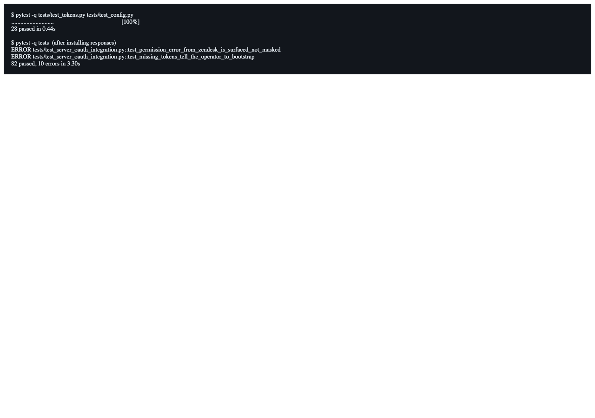
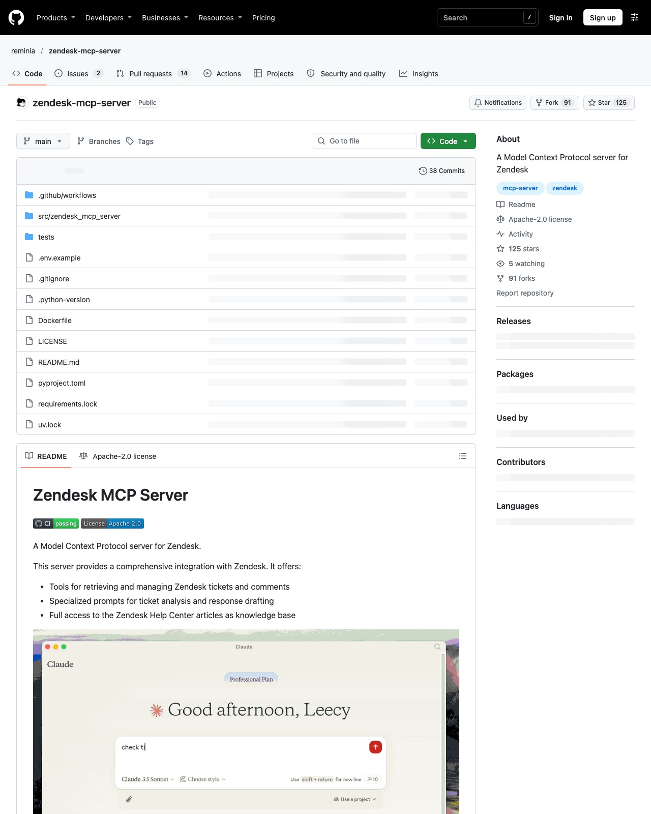
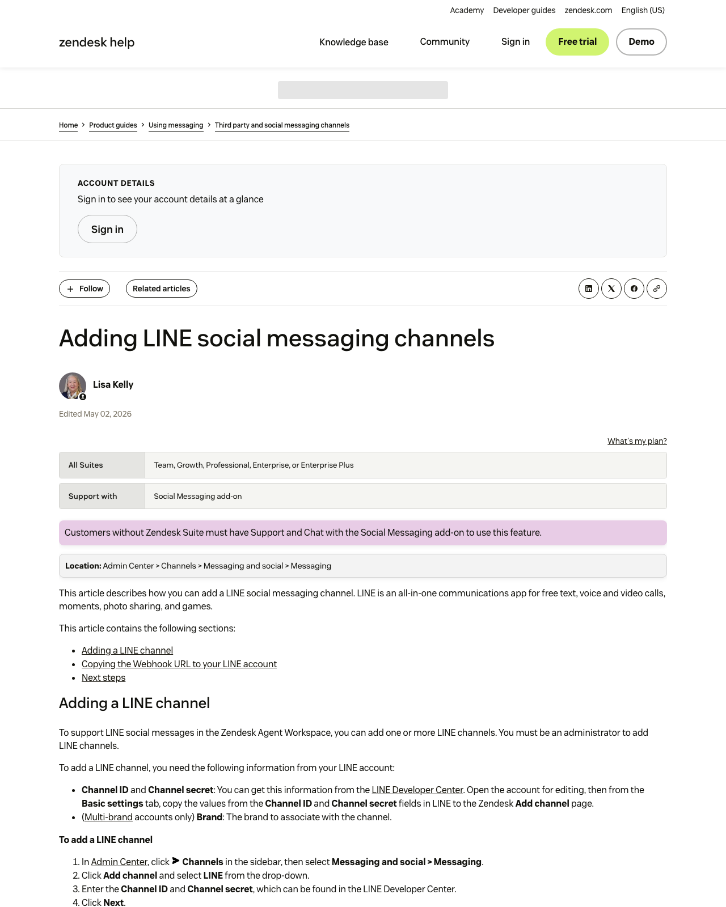
คนใช้ล็อกอิน Agent Workspace ตาม role (admin / agent / custom role ใน Enterprise). API ใช้ Authorization: Bearer access_token (OAuth) และ API token แบบ email/token ซึ่งกำลังเลิกใช้ (ปิดใช้ token ที่ไม่ได้ใช้ตั้งแต่ 2026-07-28, สร้างใหม่ไม่ได้หลัง 2026-10-27, ใช้ไม่ได้ทั้งหมด 2027-04-30 ตามโค้ดของ reminia/zendesk-mcp-server). การเพิ่มช่อง LINE ต้องเป็น admin ใส่ Channel ID + Channel secret แล้วคัดลอก Webhook URL ไปตั้งใน LINE (ใช้ Messaging API webhook ไม่ใช่ chat.line.biz)
เก็บที่: ฝั่งแพลตฟอร์ม: server-side. MCP community (reminia) เก็บ OAuth token ใน tokens.json ($XDG_CONFIG_HOME/zendesk-mcp/) โหมดไฟล์ 0600 เขียนแบบ temp+chmod
เอามาใช้: ควรเลียนแบบ: OAuth public client + PKCE ให้แต่ละคนอนุมัติด้วยตัวเอง การกระทำจึงอยู่ใต้สิทธิ์ role จริงของคนนั้น (reminia README) และเก็บ token ไฟล์ 0600. ควรหลีกเลี่ยง: API token ที่ให้สิทธิ์เต็มของผู้ใช้
อัปโหลดด้วย POST /api/v2/uploads?filename=… ได้ token อายุ 60 นาที แล้วแนบกับ comment ผ่าน Tickets API เท่านั้น; ก่อนแนบ ไฟล์เปิดได้โดยผู้ใช้ที่ล็อกอินทุกคนที่มี content_url หลังแนบจึงจำกัดตามสิทธิ์ของ ticket. content_url อาจชี้ไปโฮสต์ภายนอก จึงห้ามส่ง credential ไปด้วย. มี malware_scan_result และ admin toggle malware_access_override. redact แบบถาวร (แทนด้วย redacted.txt) ผ่าน PUT …/attachments/{id}/redact ใช้ได้เฉพาะ admin/agent ที่ได้สิทธิ์ และทำกับ ticket ที่ปิดแล้วไม่ได้. ข้อความ messaging จำกัด 50 MB ต่อไฟล์ (หน้าซัพพอร์ต Zendesk); หน้า API ไม่ระบุขนาดสูงสุด. MCP ชุมชน (reminia) ดึงเฉพาะรูป: allowlist jpeg/png/gif/webp, ตรวจ magic bytes, cap 10 MB แบบ stream แล้วคืน base64
เอามาใช้: ควรเลียนแบบ: allowlist MIME + magic bytes + cap ขนาดระหว่าง stream (reminia), ไม่ส่ง Authorization ตามไปยัง CDN ภายนอก, แยกอ่านรายการแนบกับดาวน์โหลดตาม URL. ควรหลีกเลี่ยง: คืน base64 ใหญ่ ๆ ตรงเข้า context
ตัวผลิตภัณฑ์ไม่ได้ลอง (ไม่สมัคร/ไม่ล็อกอิน). clone reminia/zendesk-mcp-server (MCP ชุมชนที่ดาวสูงสุด) ลง venv แล้วรัน pytest: 82 ผ่าน, 10 error ใน test_server_oauth_integration (ImportError cannot import name 'types' from mcp.server คือ mcp เวอร์ชันที่ติดตั้งไม่ตรง). ไม่ได้สตาร์ท server จริง ไม่มีการเชื่อมต่อเครือข่ายไป Zendesk. ที่เหลืออ่านเอกสารและโค้ดแบบ static ดู log คำสั่งและผลลัพธ์จริง
POST /api/v2/uploadsDELETE /api/v2/uploads/{token}GET /api/v2/attachments/{attachment_id}PUT /api/v2/tickets/{ticket_id}/comments/{comment_id}/attachments/{attachment_id}/redactget_ticketcreate_ticketget_ticketsget_ticket_commentscreate_ticket_commentget_ticket_attachmentupdate_ticketSDK TypeScript ไม่เป็นทางการเรียก API ภายในของ chat.line.biz ด้วย session cookie
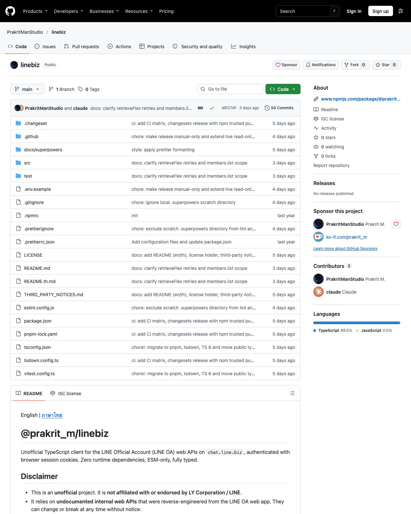
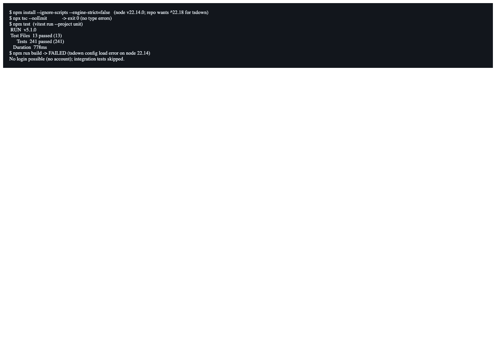
ไม่มี flow login: รับ cookie ของเซสชัน chat.line.biz ที่ล็อกอินแล้ว (header string, JSON array, Cookie-Editor/Playwright export) กรองเฉพาะ *.line.biz และทิ้ง cookie ที่หมดอายุ; เขียน (POST) ใช้ CSRF จาก GET /api/v1/csrfToken ส่งใน X-XSRF-TOKEN แล้ว retry 1 ครั้งเมื่อ 403; 401 ที่ body code=not_login = SESSION_EXPIRED
เก็บที่: MemoryCookieStore ในหน่วยความจำ รับ Set-Cookie หมุนเซสชัน; มี interface CookieStore ให้เสียบ Redis เอง; exportCookies() สำหรับบันทึก; redact cookie/CSRF ในข้อความ error
เอามาใช้: ควรลอก: CookieStore แบบเสียบได้, allow-list โดเมน line.biz/line.me, redact header ลับ, error code SESSION_EXPIRED แยกจาก UNAUTHORIZED, CSRF fetch+retry-once. ควรเลี่ยง: ไม่มี login เอง ต้องให้คนเอา cookie มาใส่
อ่านอย่างเดียว: type ของ message มี image/video/audio/file พร้อม contentHash, contentProvider, fileName, fileSize, expired/expiredAt แต่ไม่มี endpoint ดาวน์โหลดหรืออัปโหลด และไม่มีการส่งข้อความ (มีแค่ logout เป็น POST) ; retrieveFlex ดึง flexJson
เอามาใช้: ลอก schema ของ message/attachment (contentHash, expiredAt) ได้ ส่วนดาวน์โหลด/อัปโหลดต้องดูจาก LINELib
ไม่มีบัญชี จึง login/เรียกจริงไม่ได้. ติดตั้งได้เมื่อปิด engine-strict, tsc --noEmit ผ่าน, vitest 13 ไฟล์ 241 test ผ่าน, build (tsdown) ล้มบน node 22.14 ดู log คำสั่งและผลลัพธ์จริง
GET /api/v1/meGET /api/v1/botsGET /api/v1/bots/{id}GET /api/v1/bots/{id}/ownersGET /api/v1/bots/{id}/tagsGET /api/v2/bots/{id}/chatsGET /api/v2/bots/{id}/contactsGET /api/v1/bots/{bot}/chats/{chat}/membersGET /api/v3/bots/{bot}/chats/{chat}/messagesGET /api/v1/bots/{bot}/chats/{chat}/messages/flexJsonPOST /api/v1/logoutUriGET /api/v1/csrfTokenheader X-XSRF-TOKENheader x-oa-chat-client-version: 20240513144702hosts: chat.line.biz, manager.line.biz, account.line.bizMCP ที่ทำงานเป็นบัญชี WhatsApp ส่วนตัวผ่าน whatsmeow (Go bridge) + Python MCP
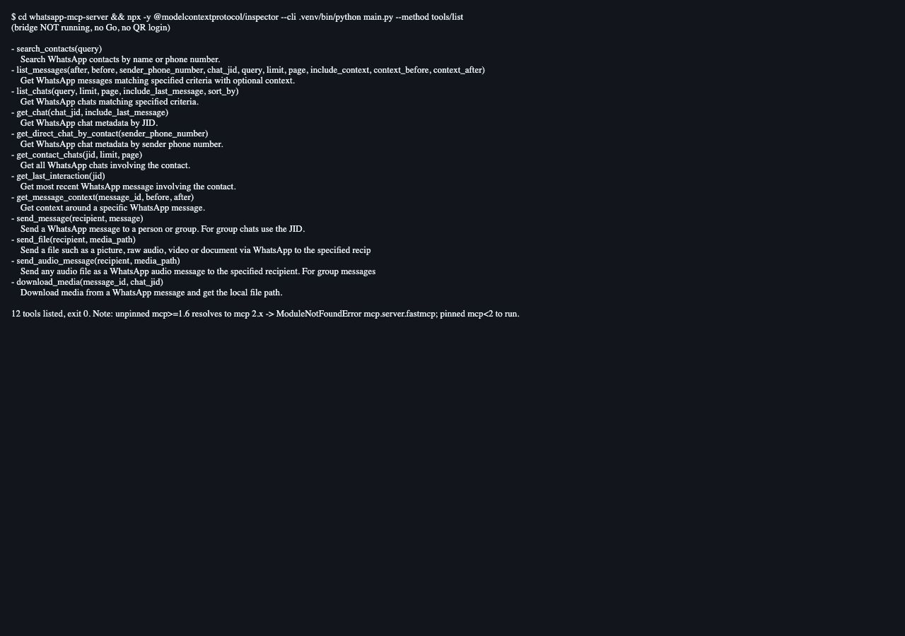
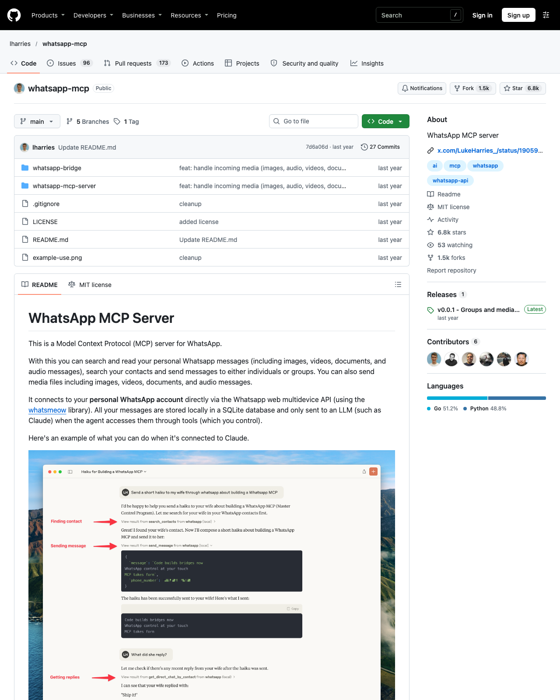
Go bridge ใช้ whatsmeow (WhatsApp Web multi-device API) แสดง QR ใน terminal ให้สแกนด้วยมือถือครั้งเดียว หลังนั้นล็อกอินต่ออัตโนมัติ; ถ้าถูก logout ต้องสแกนใหม่ ส่วน MCP server (Python) ไม่แตะ credential เลย แค่เรียก REST localhost:8080 และอ่าน SQLite
เก็บที่: session ของ whatsmeow อยู่ใน whatsapp-bridge/store/whatsapp.db และข้อความใน store/messages.db (SQLite ไม่เข้ารหัส); REST API ของ bridge listen ที่ :8080 (ทุก interface) โดยไม่มี auth หรือ token
เอามาใช้: ควรเลียนแบบ: แยกกระบวนการที่ถือ session ออกจาก MCP server, ล็อกอินครั้งเดียวด้วย QR แล้วเก็บ session ในไฟล์ local. ควรหลีกเลี่ยง: bind ทุก interface โดยไม่มี auth, เก็บ session แบบ plaintext โดยไม่ chmod, ไม่มี guard ว่าล็อกอินเป็นบัญชีที่ถูกต้อง
ขาเข้า: bridge เก็บ metadata ของสื่อ (url, media_key, sha256, length) ใน SQLite แต่ยังไม่ดาวน์โหลด; LLM เรียก download_media(message_id, chat_jid) แล้ว bridge ถอดรหัสและเซฟที่ store/<chat_jid>/<filename> ส่งคืนเป็น path ในเครื่อง (ไม่ส่งไบต์ให้ LLM). ขาออก: send_file/send_audio_message รับ media_path ในเครื่อง ตรวจแค่ว่าไฟล์มีอยู่ (audio แปลงเป็น opus .ogg ด้วย ffmpeg)
เอามาใช้: ควรเลียนแบบ: ดาวน์โหลดตามต้องการ (on-demand) ไม่ดึงสื่อทุกข้อความ. ควรหลีกเลี่ยง: ไม่มี limit ขนาด/MIME, ชื่อไฟล์จากผู้ส่งถูกใช้เป็น path โดยไม่เห็นการ sanitize, send_file รับ path ใดก็ได้ในเครื่อง (ไม่มี sandbox), คืนแค่ path ทำให้ LLM ต้องมี filesystem access
ไม่มี Go จึงไม่ build bridge/ไม่ทำ QR. ติดตั้งฝั่ง Python ด้วย uv venv: ครั้งแรก mcp 2.x ทำให้ import fastmcp พัง จึง pin mcp<2 แล้วรัน inspector --cli tools/list สำเร็จโดยไม่ต้องมี bridge ได้ 12 tools ดู log คำสั่งและผลลัพธ์จริง
search_contactslist_messageslist_chatsget_chatget_direct_chat_by_contactget_contact_chatsget_last_interactionget_message_contextsend_messagesend_filesend_audio_messagedownload_mediaPOST /api/send (bridge :8080)POST /api/download (bridge :8080)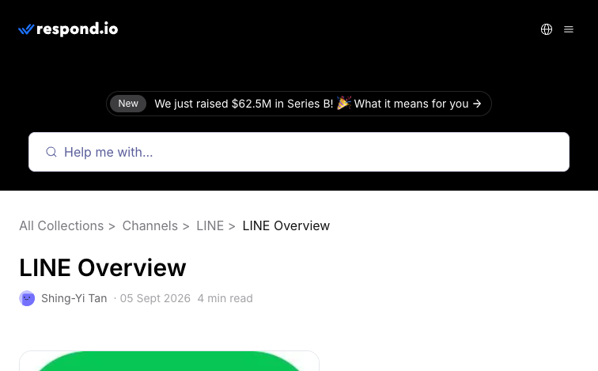
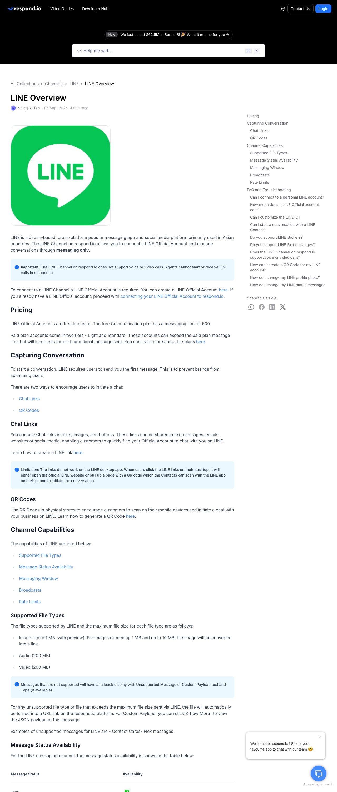
เชื่อม LINE OA ผ่าน Messaging API ตาม Quick Start (บทความ overview ไม่อธิบาย webhook)
เก็บที่: ไม่เปิดเผย
เอามาใช้: ไม่มีอะไรให้ลอก
รูป ≤1MB ส่งพร้อมพรีวิว, 1-10MB แปลงเป็นลิงก์; เสียง/วิดีโอ ≤200MB; รับ sticker ได้แต่ส่งไม่ได้; contact card และ Flex ไม่รองรับ แสดงเป็น Unsupported Message/Custom Payload; ไฟล์ที่ไม่รองรับหรือใหญ่เกินกลายเป็นลิงก์ URL
เอามาใช้: ลอกแนว fallback: ชนิดที่ไม่รองรับแสดงเป็นข้อความบอกชนิด + ลิงก์ แทนการทิ้ง; รูปใหญ่ส่งเป็นลิงก์
ไม่มีบัญชี อ่านเอกสาร LINE Overview และถ่ายภาพ ไม่พบข้อมูล history import ดู log คำสั่งและผลลัพธ์จริง
ไม่มี
Inbox แชตหลายช่องทางของ Freshworks; มีช่อง LINE Messenger แบบเนทีฟ
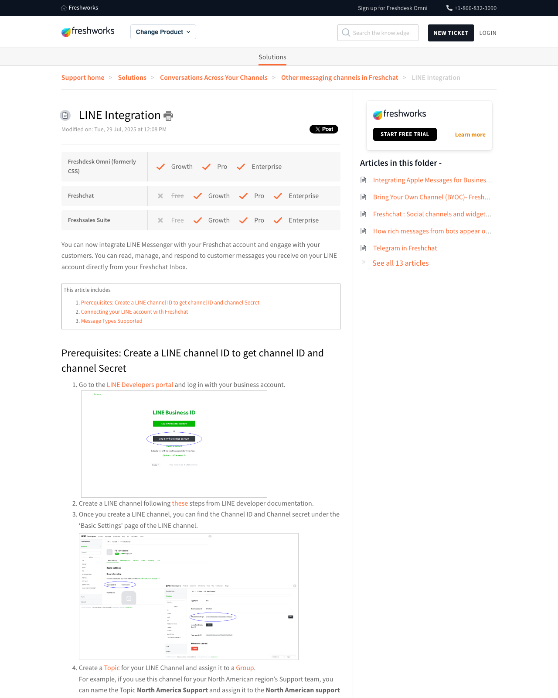
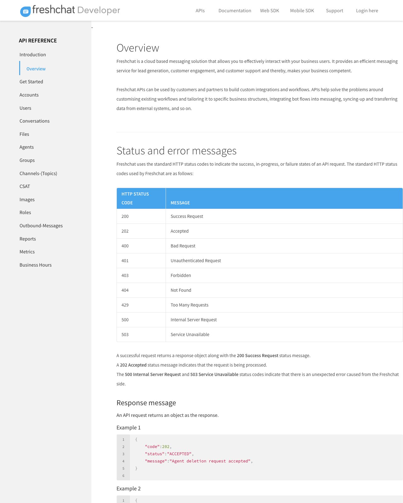
API: Bearer token (API key สร้างที่ Admin > CONFIGURE > API Tokens) ใน header Authorization; token หมดอายุแล้วได้ 401 ต้องขอใหม่; base URL https://<account>.freshchat.com/v2/. คนใช้ล็อกอิน Freshchat inbox ตาม role (มี endpoint Roles/Agents/Groups). ช่อง LINE ผูกโดย admin ใส่ Channel ID+Secret แล้ววาง message URL ของ Freshchat เป็น webhook ใน LINE Messaging API
เก็บที่: API key เก็บฝั่งลูกค้า (ไม่ระบุในเอกสาร); LINE Channel secret เก็บฝั่ง Freshchat
เอามาใช้: ใช้อ้างอิงได้น้อย: bearer key ระดับบัญชีไม่ใช่การทำงานแทนคน CS รายคน. ข้อดีคือ rate limit ที่บอกผ่าน header X-RateLimit-* และ 401 → ขอ token ใหม่
POST /v2/files/upload: 1 ไฟล์ต่อ request สูงสุด 25 MB (PDF, รูป, วิดีโอ, ข้อความ) ได้ file_hash ไปแนบใน conversation และ file_security_status (AV_PENDING / SAFE_FILE); มี POST /v2/images/upload แยก (รายละเอียดไม่ได้อ่าน). ส่งข้อความด้วย POST /v2/conversations/{id}/messages โดย message_parts มี text/image/video/file. ช่อง LINE: รูปและวิดีโอรับ-ส่งได้, ไฟล์รับอย่างเดียว, เสียงรับได้ ส่งออกเฉพาะจากแอป LINE, ไม่รองรับสติกเกอร์/อิโมจิ/กลุ่ม
เอามาใช้: ควรเลียนแบบ: สถานะสแกนไวรัสของไฟล์ (file_security_status) และแยกขั้นอัปโหลด→ใช้ hash. ข้อควรรู้: LINE รับไฟล์ได้แต่ส่งไฟล์ออกไม่ได้ ซึ่งสะท้อนข้อจำกัดของ LINE API
เป็นผลิตภัณฑ์ SaaS ปิด ไม่สมัคร/ไม่ล็อกอิน จึงอ่านเอกสารสาธารณะเท่านั้น (API reference อ่านได้ 100,000 ตัวอักษรแรกจาก 260,177; ส่วน Images upload ไม่ได้อ่าน). ค้น GitHub พบ MCP แค่ fero8/freshchat_mcp (0 ดาว) ไม่ได้ลอง ดู log คำสั่งและผลลัพธ์จริง
POST /v2/files/uploadPOST /v2/images/uploadPOST /v2/conversations/{conversation_id}/messagesGET /v2/channels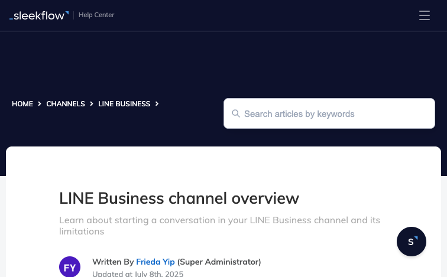
ผู้ดูแลเชื่อม LINE OA ผ่านช่องทางทางการ (Messaging API) ฝั่ง agent ล็อกอินบัญชี SleekFlow; ขั้นตอน webhook ยังไม่ได้ยืนยันจากหน้าที่อ่าน
เก็บที่: ไม่เปิดเผย (SaaS)
เอามาใช้: ไม่มีอะไรให้ลอก เพราะใช้ Messaging API
ส่งได้: เอกสาร รูป วิดีโอ เสียง (สูงสุด 16MB), ข้อความสูงสุด 1,800 ตัวอักษร, payment link, product catalog; รับได้: ข้อความ รูป เสียง อีโมจิ; ไม่รับ location/sticker/contact
เอามาใช้: ใช้ตัวเลข 16MB และ 1,800 ตัวอักษรเป็น guard ฝั่งส่ง; รับ location/sticker/contact ให้แสดงเป็น placeholder
ไม่มีบัญชีจึงไม่ได้ทดลอง อ่านหน้า help center และถ่ายภาพหน้า LINE; ไม่พบเรื่อง history import ดู log คำสั่งและผลลัพธ์จริง
ไม่มี
MCP แบบ remote ของ Intercom อ่านบทสนทนา/ผู้ติดต่อ ผ่าน OAuth หรือ bearer token
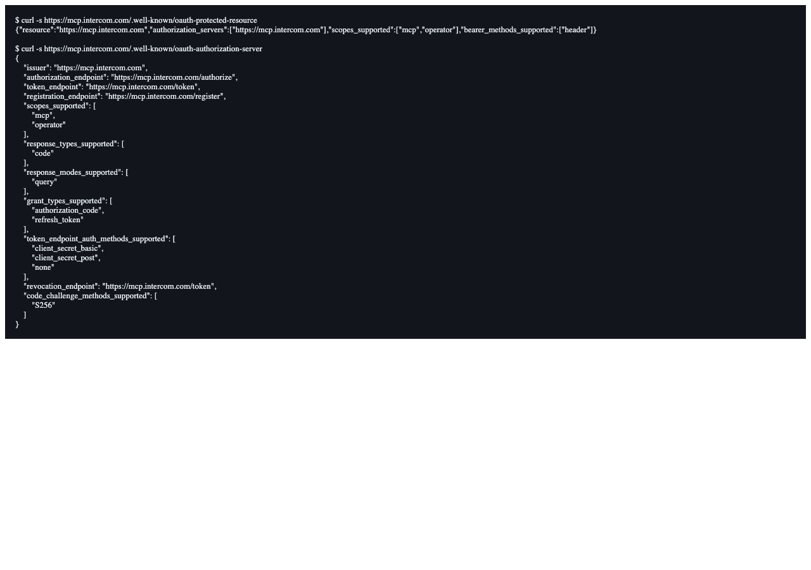
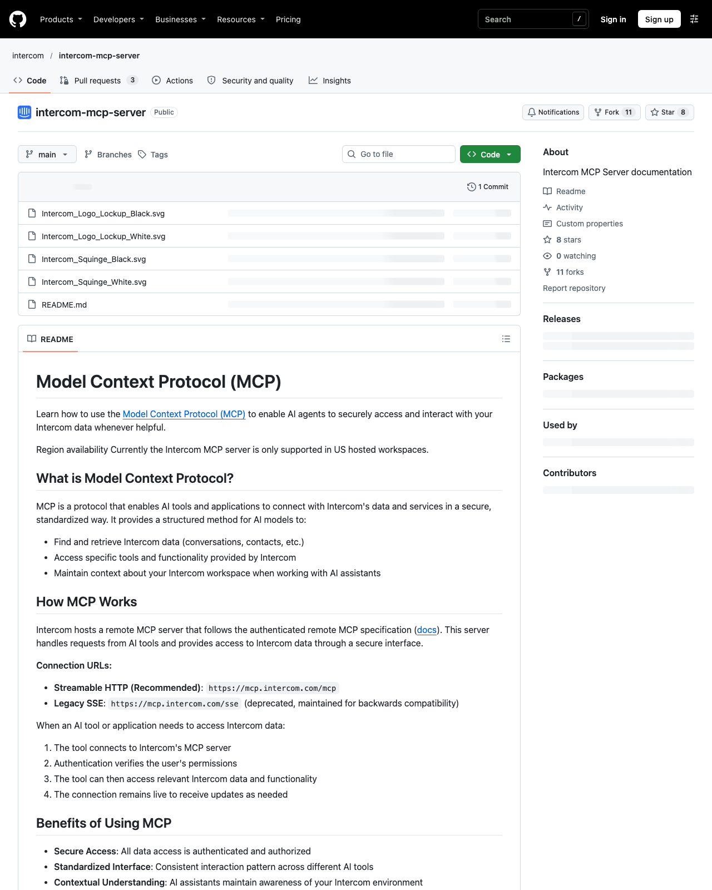
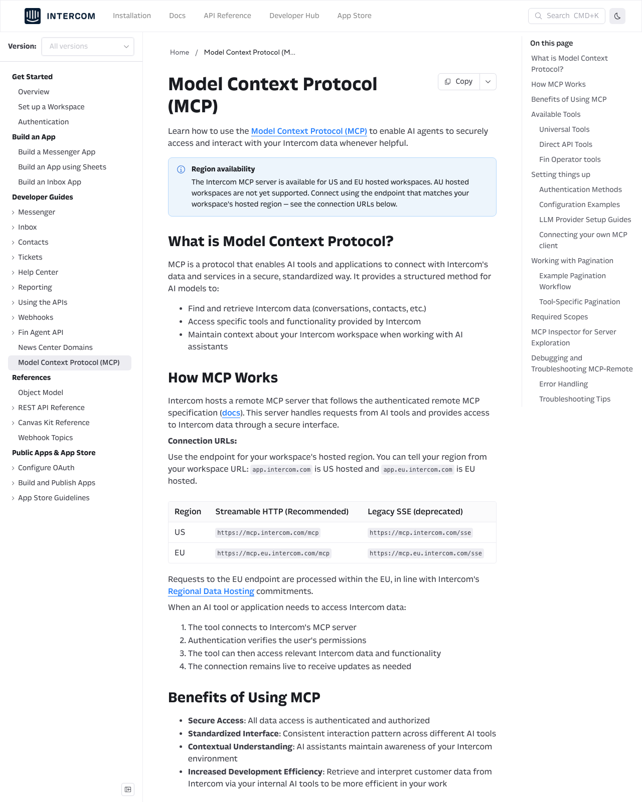
OAuth 2.0 authorization code + PKCE (S256) บนเบราว์เซอร์: หน้า consent ของ Intercom แล้วหน้า authorize (หน้า consent หมดอายุ 15 นาที); รองรับ dynamic client registration (/register), refresh_token, scope 'mcp' และ 'operator'. ทางเลือกคือ bearer token (Intercom API token) ใน header Authorization แต่ใช้ Fin Operator tools ไม่ได้. สิทธิ์ที่ต้องมี: อ่านผู้ใช้/บริษัท, อ่านบทสนทนา, เขียนบทสนทนา (internal note), อ่าน/เขียนบทความ. redirect URI นอก localhost ต้องอยู่ใน allowlist. ยืนยันจริงผ่าน .well-known endpoints สาธารณะ
เก็บที่: ฝั่ง client (เช่น mcp-remote) เก็บ token ใน auth cache ของตัวเอง (docs มีขั้นตอนล้าง auth cache); ฝั่ง server ไม่เปิดเผยในเอกสาร
เอามาใช้: ควรเลียนแบบ: OAuth+PKCE ที่ผู้ใช้อนุมัติเองและ refresh token ได้, scope แยกอ่าน/เขียน, tool เขียนมีแค่ add_internal_note (ไม่ส่งข้อความหาลูกค้า). ควรหลีกเลี่ยง: ไม่ใช้กับ LINE OA ได้ตรง ๆ เพราะเราต้องสวมสิทธิ์ session เว็บของคน CS ไม่ใช่ OAuth ของแพลตฟอร์ม
เอกสารไม่ได้อธิบายว่า tool คืนไฟล์แนบอย่างไร (ไม่มี tool ดาวน์โหลดไฟล์โดยเฉพาะ); get_conversation คืนบทสนทนาทุก part พร้อม metadata ซึ่งน่าจะมีรายการ attachment เป็น URL ตาม Intercom conversation part แต่ไม่ได้ยืนยัน. ไม่มีข้อมูล limit ขนาด/MIME ของ MCP
เอามาใช้: ไม่มีอะไรให้เลียนแบบด้านไฟล์; เป็นตัวอย่างว่าบางเจ้าตัด attachment ออกจากขอบเขต MCP ของ tool อ่านล้วน
ไม่ล็อกอิน/ไม่สมัคร จึงรัน tools/list ไม่ได้ (ต้อง token). อ่านเอกสารแบบ static และ clone repo intercom/intercom-mcp-server (มีแต่ README+โลโก้). ดึง .well-known/oauth-protected-resource และ oauth-authorization-server ที่เป็นสาธารณะด้วย curl GET ได้ metadata จริง (S256, authorization_code+refresh_token, scopes mcp/operator). ไม่ได้ส่ง request ไป endpoint /mcp ดู log คำสั่งและผลลัพธ์จริง
searchfetchsearch_conversationsget_conversationsearch_contactsget_contactlist_companiesget_companylist_articlessearch_articlesget_articlecreate_articleupdate_articleadd_internal_notesend_operator_messageget_operator_responseget_proposal_detailsapply_proposalsreject_proposalsส่วนขยาย Chrome ดึงประวัติแชต LINE OA (CSV) ผู้ติดต่อ แท็ก โน้ต เข้า PropertyOS
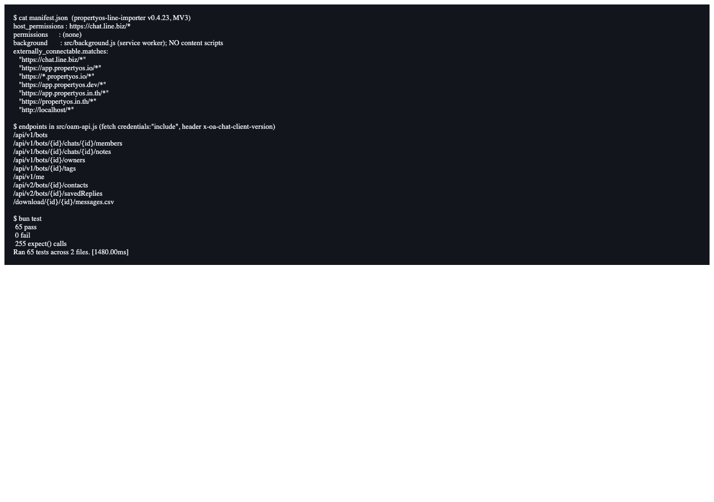
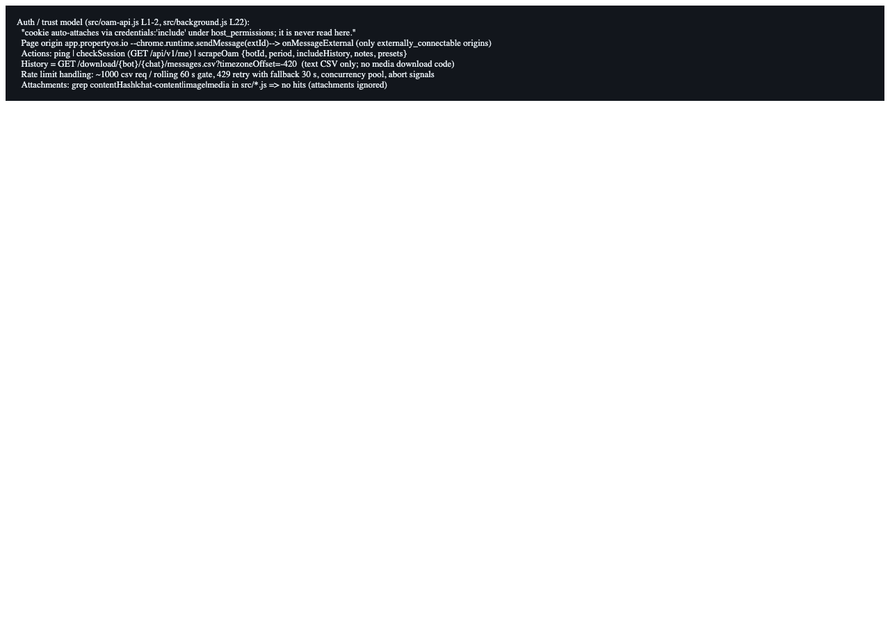
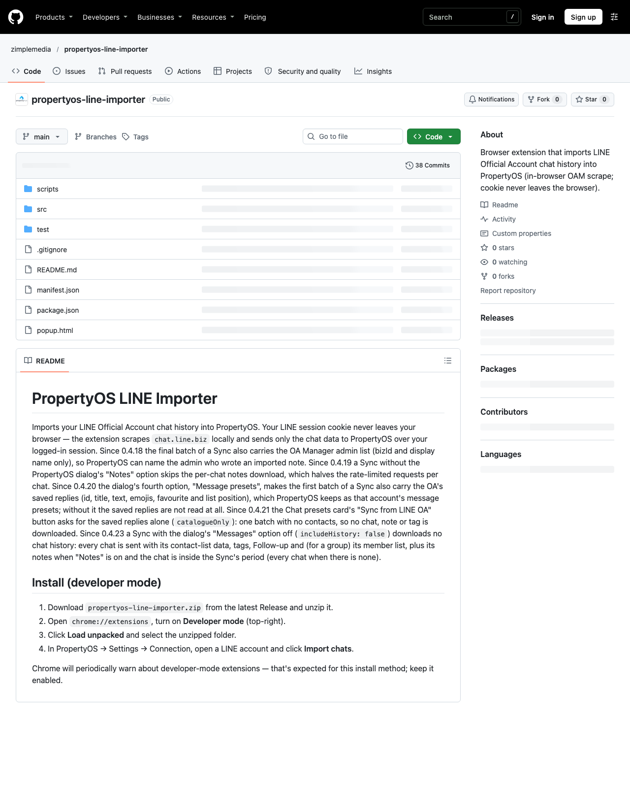
ใช้คุกกี้ล็อกอิน chat.line.biz ของผู้ใช้ผ่าน host_permissions + fetch credentials:include โดยไม่อ่านคุกกี้ ไม่ขอ permissions อื่น; เว็บ PropertyOS เรียก extension ผ่าน externally_connectable (จำกัดโดเมน) ด้วย action ping/checkSession/scrapeOam; checkSession ใช้ GET /api/v1/me
เก็บที่: ไม่เก็บคุกกี้หรือ secret ใด ๆ; ข้อมูลส่งกลับเป็น batch ให้หน้าเว็บ PropertyOS
เอามาใช้: คัดลอก: service worker + host_permissions + credentials:include ได้สิทธิ์เซสชันโดยไม่แตะคุกกี้, checkSession ผ่าน /api/v1/me, rate-limit gate พร้อม 429 backoff; ระวัง externally_connectable รวม http://localhost/*
ไม่จัดการไฟล์แนบเลย: ดึงประวัติเป็นข้อความผ่าน /download/{bot}/{chat}/messages.csv เท่านั้น ไม่มีโค้ด contentHash/chat-content
เอามาใช้: ไม่มีอะไรให้คัดลอกด้านไฟล์แนบ แต่ messages.csv เป็นทางเลือกเบาสำหรับ search/อ่านย้อนหลังแบบข้อความ
รันกับ LINE จริงไม่ได้ จึงทำ static trial: รัน bun test (65 ผ่าน), สกัด manifest/permissions และรายการ endpoint ดู log คำสั่งและผลลัพธ์จริง
GET /api/v1/meGET /api/v1/bots?limit=1000&noFilter=trueGET /api/v2/bots/{botId}/contactsGET /api/v1/bots/{botId}/tagsGET /api/v2/bots/{botId}/savedRepliesGET /api/v1/bots/{botId}/ownersGET /api/v1/bots/{botId}/chats/{chatId}/notesGET /api/v1/bots/{botId}/chats/{chatId}/membersGET /download/{botId}/{chatId}/messages.csv?timezoneOffset=-420header x-oa-chat-client-versionส่วนขยาย Chrome ดาวน์โหลดประวัติแชต LINE OA พร้อมรูป/ไฟล์ เป็น data.zip
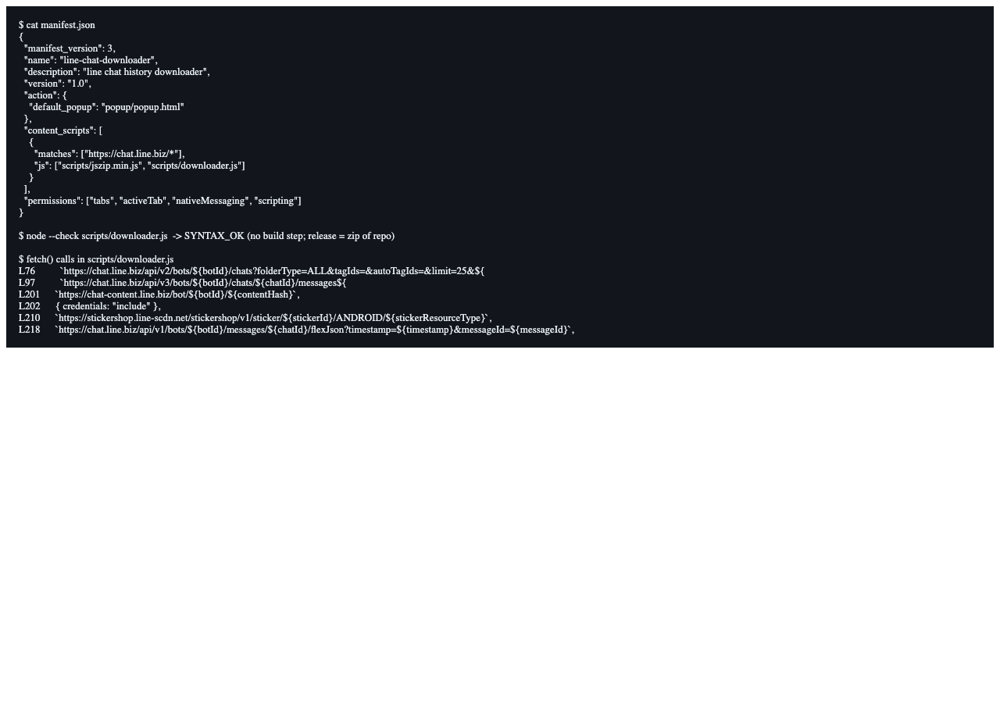
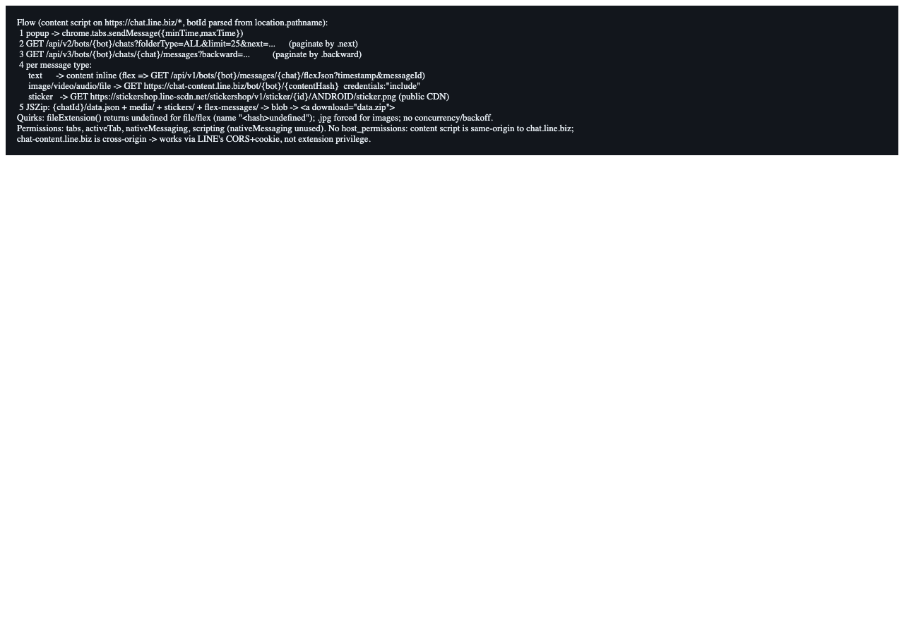
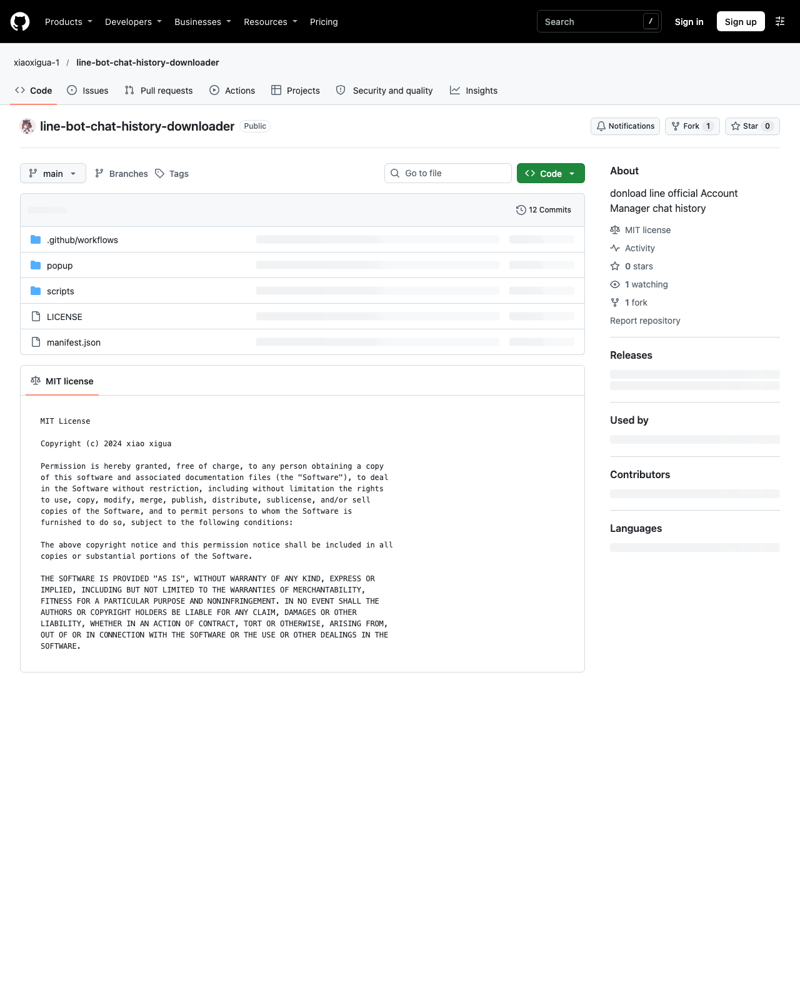
content script ฝังบน https://chat.line.biz/* เรียก fetch จากเพจเองจึงใช้คุกกี้เซสชันที่ล็อกอินอยู่ ไม่ได้ขอ host_permissions; ดึง botId จาก location.pathname; ขอ chat-content.line.biz ด้วย credentials:include; ไม่มีการจัดการหมดอายุ
เก็บที่: ไม่เก็บอะไร ผลสร้างเป็น blob ZIP ในหน้าแล้ว download
เอามาใช้: ใช้เป็นตัวอย่าง minimal ว่า same-origin fetch จากแท็บที่ล็อกอินพอสำหรับ endpoint ภายใน; ไม่ควรเลียนแบบ permission เกินจำเป็น (tabs, nativeMessaging)
อ่านประวัติจาก /v3 messages แล้ว: image/video/audio/file ดาวน์โหลดจาก https://chat-content.line.biz/bot/{botId}/{contentHash} ด้วย credentials:include เป็น blob; สติกเกอร์จาก stickershop.line-scdn.net (สาธารณะ); flex จาก /api/v1/bots/{bot}/messages/{chat}/flexJson; จัดเป็นโฟลเดอร์ media/ stickers/ flex-messages/ ใน ZIP ส่งไฟล์ไม่ได้
เอามาใช้: คัดลอกวิธีดึงสื่อด้วย contentHash + chat-content.line.biz ด้วยคุกกี้เซสชัน (พิสูจน์ว่า URL นี้ใช้ได้); ระวังบั๊ก: นามสกุลไฟล์ file/flex เป็น undefined, ไม่มี limit/backoff, โหลดทั้งหมดลงหน่วยความจำ
รันกับ LINE ไม่ได้ จึงทำ static trial: node --check ผ่าน (ไม่มี build) สกัด manifest และรายการ fetch/endpoint พร้อมแคปผล ดู log คำสั่งและผลลัพธ์จริง
GET /api/v2/bots/{botId}/chats?folderType=ALL&limit=25&nextGET /api/v3/bots/{botId}/chats/{chatId}/messages?backwardGET /api/v1/bots/{botId}/messages/{chatId}/flexJson?timestamp&messageIdGET https://chat-content.line.biz/bot/{botId}/{contentHash}GET https://stickershop.line-scdn.net/stickershop/v1/sticker/{id}/ANDROID/{sticker.png|sticker_animation.png}ระบบจัดการแชทไทย รวม LINE OA/FB/IG/TikTok มี AI ร่างคำตอบและ API
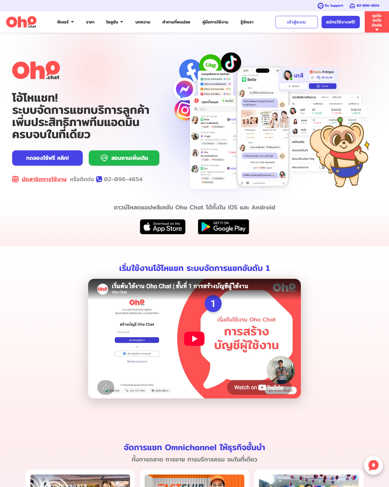
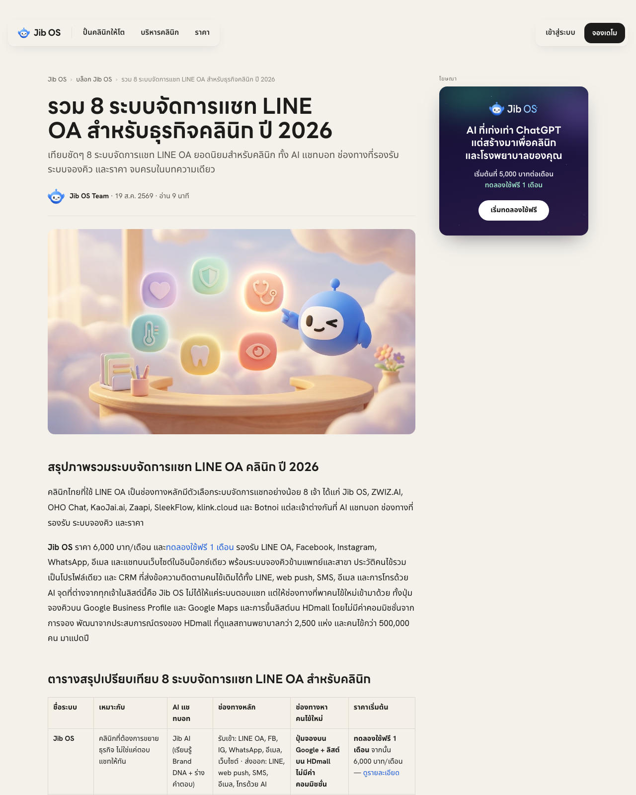
แอดมินล็อกอินบัญชี Oho Chat (สมัครด้วยอีเมลหรือ Facebook ตามวิดีโอสอน) ไม่ต้องใช้บัญชี Facebook ส่วนตัวของแอดมิน; มีการแบ่งหน้าที่/สิทธิ์; วิธีเชื่อม LINE OA ไม่ยืนยัน
เก็บที่: ไม่เปิดเผย
เอามาใช้: แนวคิดแยกบัญชีแอดมินออกจากบัญชีเจ้าของช่องทาง (ใกล้เคียงโจทย์ 'ทำแทน CS')
มี media library เก็บรูป คลิป ไฟล์บนคลาวด์ให้ทีมใช้ร่วม และบันทึกคำตอบ/รูป/ลิงก์ที่ใช้บ่อย; ไม่พบตัวเลขขีดจำกัด
เอามาใช้: แนวคิดคลัง media ใช้ซ้ำ
ไม่มีบัญชี อ่านหน้าเว็บสาธารณะและบทความเปรียบเทียบ; ค้นหาเอกสารเชื่อม LINE และ AI draft approval ไม่พบ ดู log คำสั่งและผลลัพธ์จริง
ไม่มี
MCP ชุมชนสำหรับ Chatwoot: ลิสต์แชต อ่านข้อความ ตอบ และเขียนโน้ตภายใน
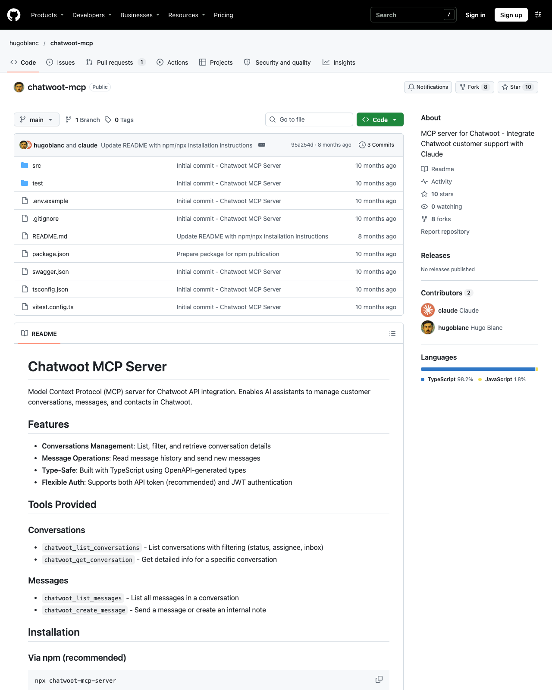
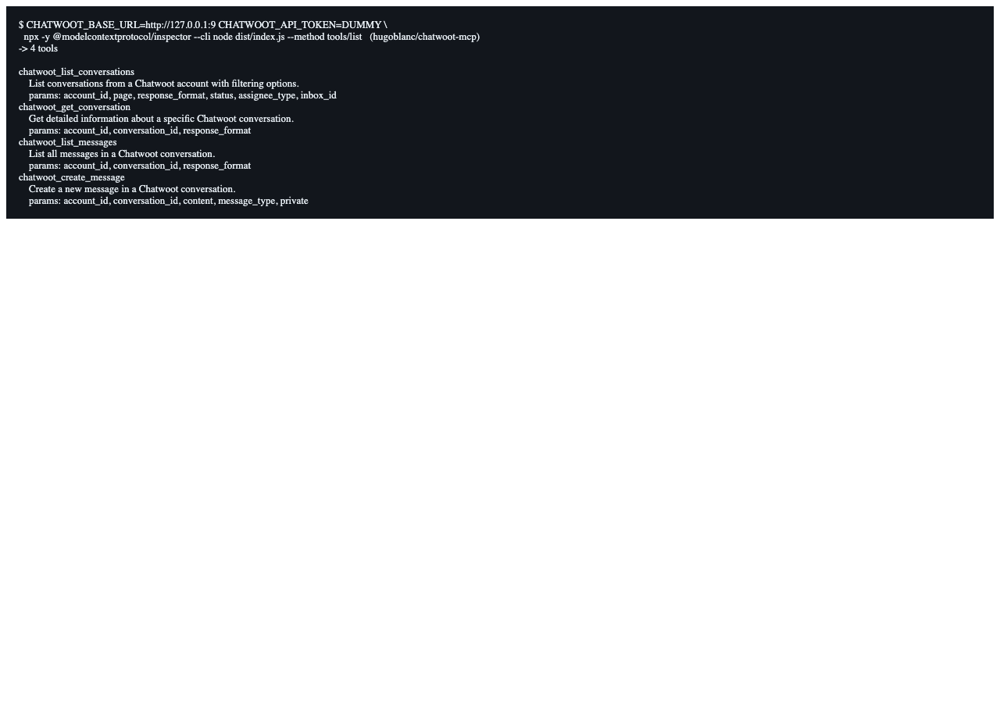
API access token ของ Chatwoot (header api_access_token) หรือสำรองด้วยอีเมล/รหัสผ่านแลก JWT แล้วรีเฟรชเอง
เก็บที่: API token ใน env; JWT cache ที่ ~/.chatwoot-mcp/tokens.json (เขียนด้วย fs.writeFile ไม่กำหนด mode จึงเป็นสิทธิ์ตาม umask เริ่มต้น)
เอามาใช้: ลอกแนวคิดรีเฟรชโทเคนอัตโนมัติ แต่ควรบังคับ chmod 0600 บนไฟล์ cache และไม่เก็บรหัสผ่านถ้าเลี่ยงได้
อ่านเฉพาะจำนวนไฟล์แนบ ('N file(s)') ในข้อความ; ไม่ดาวน์โหลดและไม่มีพารามิเตอร์แนบไฟล์ตอนส่ง
เอามาใช้: ไม่มีให้ยืม; เป็นตัวอย่างของสิ่งที่ต้องทำเพิ่ม
pnpm install --ignore-scripts, tsc build แล้วรัน inspector tools/list ด้วย CHATWOOT_BASE_URL=http://127.0.0.1:9 และ token DUMMY ได้ 4 tools จริง (npm install ล้มด้วยบั๊ก npm จึงใช้ pnpm); ไม่เรียก tool เพราะไม่มี Chatwoot ดู log คำสั่งและผลลัพธ์จริง
chatwoot_list_conversationschatwoot_get_conversationchatwoot_list_messageschatwoot_create_message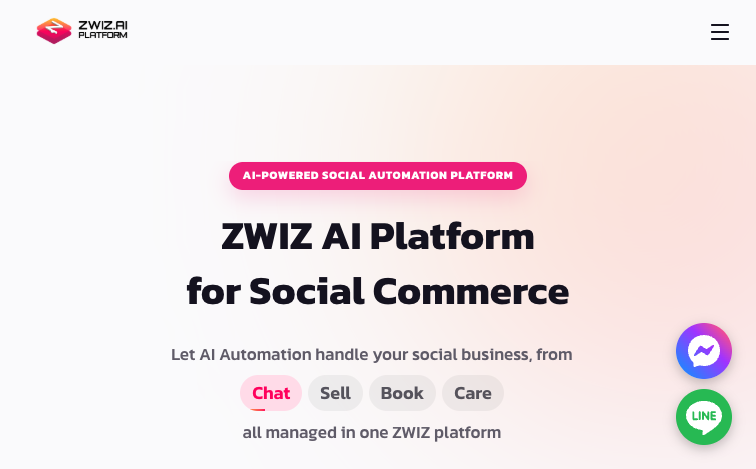
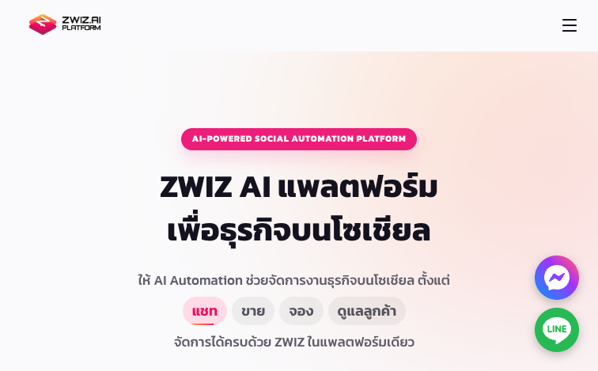
ไม่ระบุสาธารณะ (ปุ่ม LINE/Messenger บนเว็บ; LINE เป็น technology partner)
เก็บที่: ไม่เปิดเผย
เอามาใช้: ไม่มีอะไรให้ลอก
มีตรวจสลิปโอนเงินอัตโนมัติ (ธนาคารหลัก/TrueMoney) บนหน้าเว็บ ไม่มีรายละเอียดการจัดการรูป/ไฟล์ใน inbox
เอามาใช้: ไอเดียตรวจสลิปจากรูปที่ลูกค้าส่ง อาจเป็น extension ของ tool อ่านรูปในอนาคต
ไม่มีบัญชี ดึงข้อมูลจากหน้าเว็บสาธารณะและถ่ายภาพเท่านั้น ดู log คำสั่งและผลลัพธ์จริง
ไม่มี
MCP ทางการของ LINE ครอบ Messaging API ให้ AI ส่งข้อความในนาม bot
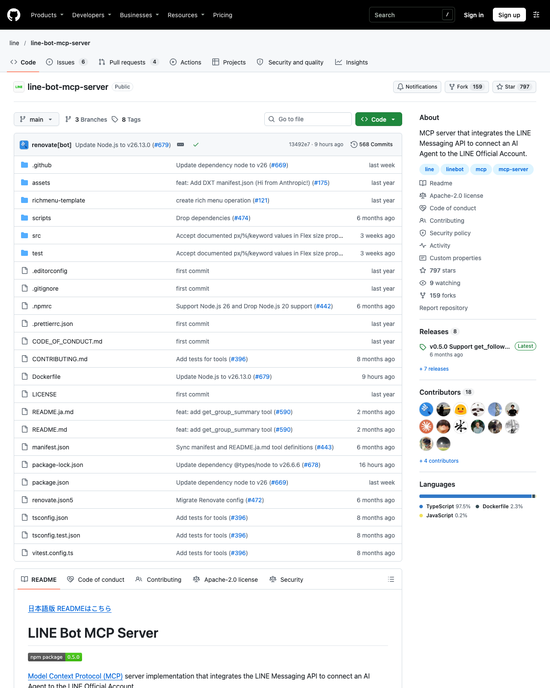
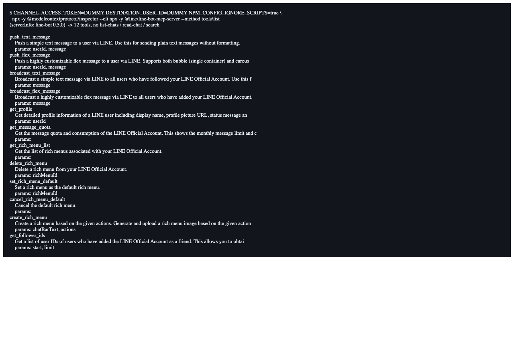
ใช้ Channel Access Token (long-lived) ของ Messaging API ผ่าน env CHANNEL_ACCESS_TOKEN และ DESTINATION_USER_ID เป็นปลายทางเริ่มต้น ตัวตนคือ bot ของ OA ไม่ใช่เจ้าหน้าที่ CS
เก็บที่: อยู่ใน env ของ process MCP (config ของ client) ไม่มีการเก็บ session เอง
เอามาใช้: ไม่ตรงโจทย์เรื่อง act on behalf of human; เอาแค่แนวคิดส่ง secret ผ่าน env และตั้ง NPM_CONFIG_IGNORE_SCRIPTS=true ใน config ตัวอย่างของเขา
ไม่มีเครื่องมืออ่านรูป/ไฟล์จากแชต ส่งได้เฉพาะ text และ flex message (รูปอ้างด้วย URL ภายใน flex JSON) มี create_rich_menu ที่อัปโหลดรูป rich menu
เอามาใช้: ไม่มีอะไรให้ยืมสำหรับ attachment ขาเข้า; ใช้เป็นตัวอย่างว่า Messaging API ไม่ให้ดึงประวัติแชต
รัน inspector --cli tools/list ด้วย CHANNEL_ACCESS_TOKEN=DUMMY ได้ 12 tools จริง (serverInfo line-bot 0.5.0) ไม่เรียก tool ใดเลย หมายเหตุ: ครั้งแรกค้างจน timeout เพราะ install script ของ npx; ต้องตั้ง NPM_CONFIG_IGNORE_SCRIPTS=true จึงผ่าน ดู log คำสั่งและผลลัพธ์จริง
push_text_messagepush_flex_messagebroadcast_text_messagebroadcast_flex_messageget_profileget_message_quotaget_rich_menu_listdelete_rich_menuset_rich_menu_defaultcancel_rich_menu_defaultcreate_rich_menuget_follower_idsระบบรวมแชทและแชทบอทไทยจาก Clicknext รองรับ LINE OA, FB, IG, TikTok, Lazada
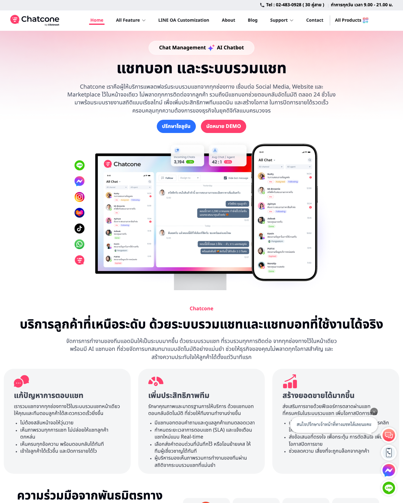
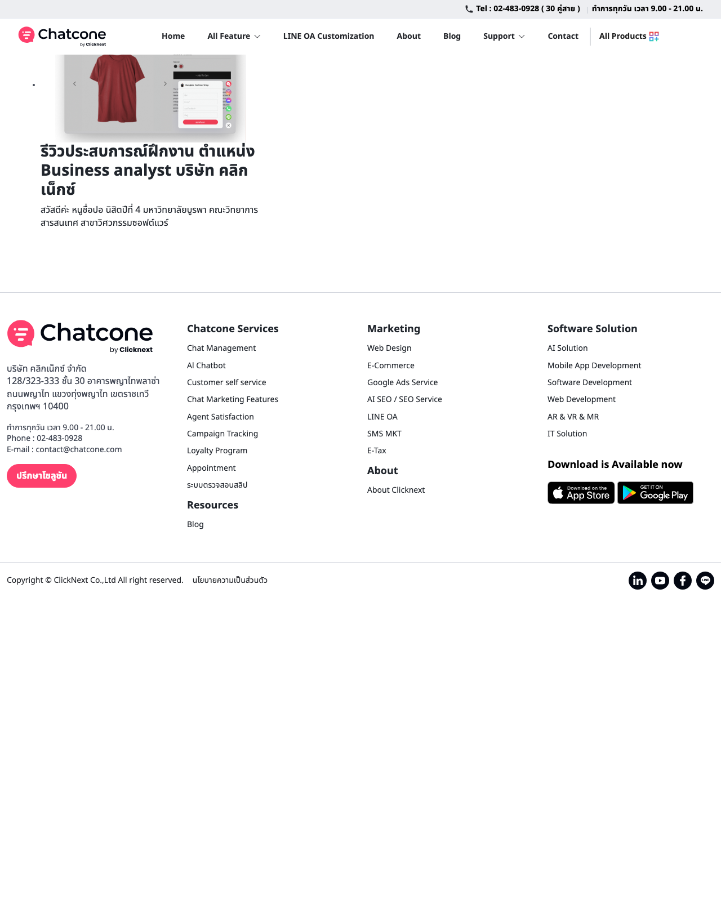
ไม่ระบุสาธารณะว่าเชื่อม LINE OA อย่างไร (เว็บบอกแค่ 'เชื่อมต่อบน LINE OA ของธุรกิจ'); ยืนยันไม่ได้ว่าใช้ Messaging API webhook
เก็บที่: ไม่เปิดเผย
เอามาใช้: ไม่มีอะไรให้ลอก
ส่งข้อความ รูป วิดีโอ การ์ด และบันทึกคำตอบ/รูป/ลิงก์ที่ใช้บ่อย; มีเมนู 'ระบบตรวจสอบสลิป' แต่ไม่มีรายละเอียด; ไม่พบเรื่องนำเข้าประวัติแชทเก่า
เอามาใช้: ไอเดียตรวจสลิปจากรูปลูกค้า
ไม่มีบัญชี อ่านหน้าเว็บสาธารณะและถ่ายภาพเท่านั้น; ไม่พบเอกสารเชื่อม LINE, API หรือนำเข้าประวัติ ดู log คำสั่งและผลลัพธ์จริง
ไม่มี
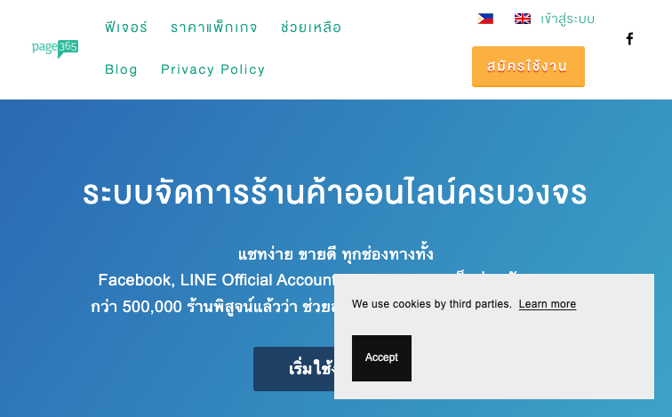
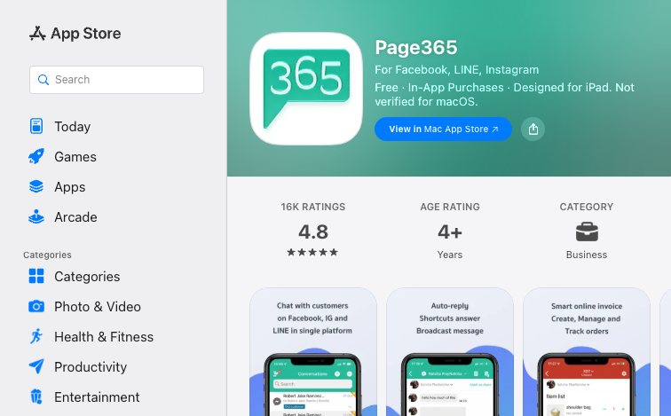
เชื่อม Facebook Page, LINE OA, IG แล้วให้แอดมินหลายคนล็อกอินระบบ Page365
เก็บที่: ไม่เปิดเผย
เอามาใช้: แนวคิดระบุแอดมินที่ตอบแต่ละแชท ใช้เป็น audit ได้
ไม่ระบุสาธารณะเรื่องไฟล์/รูป
เอามาใช้: ไม่มี
ไม่มีบัญชี ดูหน้าเว็บและ App Store เท่านั้น ดู log คำสั่งและผลลัพธ์จริง
ไม่มี
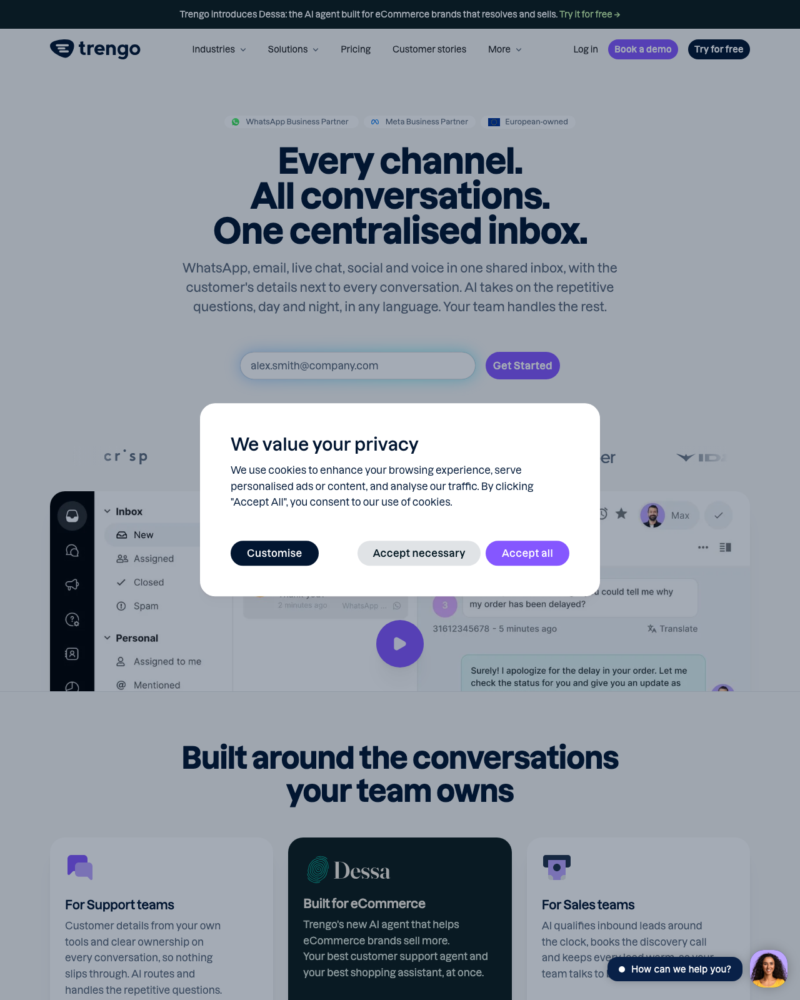
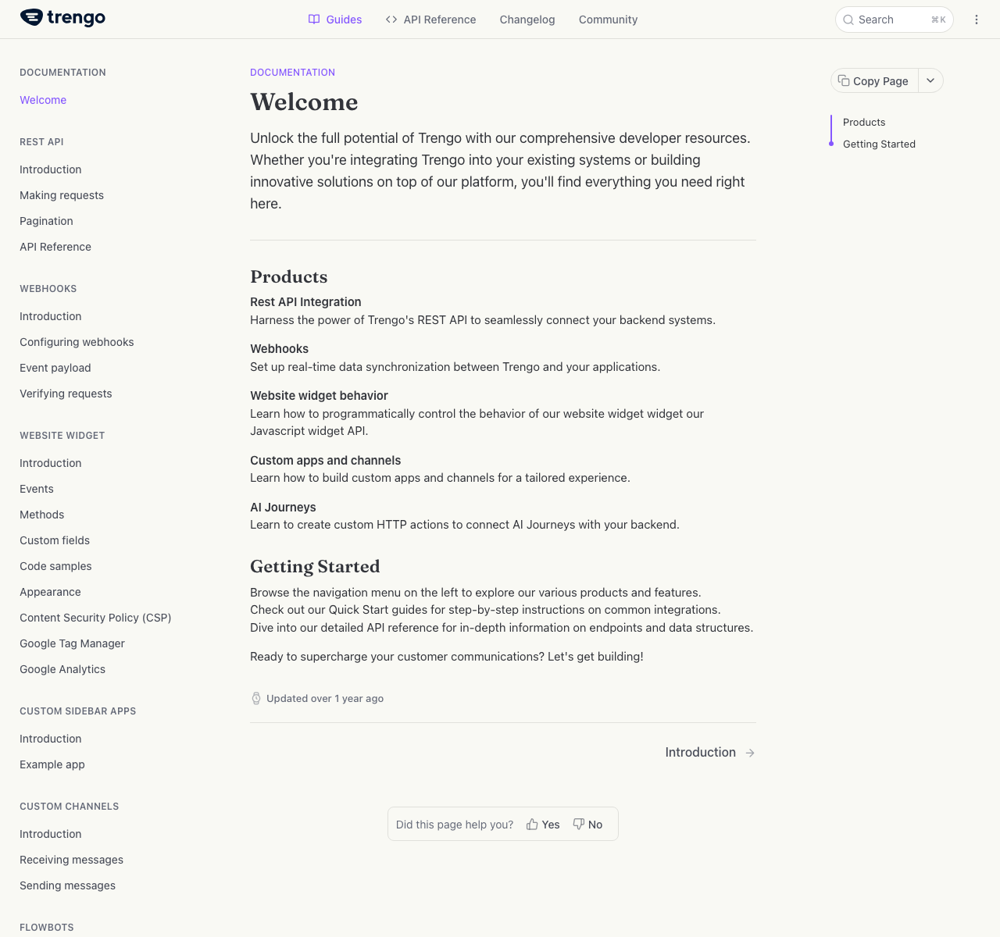
ล็อกอินบัญชีผู้ใช้; การเพิ่มช่องทางต้องมี role Administrator; REST API + webhooks (verify request) แต่ไม่ได้ยืนยันรายละเอียด token จากหน้าที่อ่านได้
เก็บที่: ไม่เปิดเผย
เอามาใช้: แนวคิดแยกสิทธิ์ Administrator สำหรับการเชื่อมช่องทาง; ไม่มีอะไรเกี่ยวกับ LINE ให้ลอก
หน้าที่อ่านได้ไม่ระบุขนาด/ชนิดไฟล์; มี endpoint อัปโหลดไฟล์ของ WhatsApp template เท่านั้น ไม่ยืนยันขีดจำกัด
เอามาใช้: ไม่มีรายละเอียดให้ลอก
ไม่มีบัญชี อ่านหน้าเว็บ/help/developer docs สาธารณะและถ่ายภาพเท่านั้น; ยืนยันไม่ได้ว่ารองรับ LINE, ขนาดไฟล์, วิธีขอ token ดู log คำสั่งและผลลัพธ์จริง
ไม่มี
สคริปต์ TS เล่น cookie ซ้ำกับ /api/v2/chats เพื่อ export รายชื่อเพื่อน LINE OA
ไม่มี login: ผู้ใช้คัดลอกสตริง Cookie ทั้งชุดจากเบราว์เซอร์ใส่ .env (LINE_CHAT_COOKIE) แล้วส่งเป็น header Cookie ใน GET https://chat.line.biz/api/v2/bots/{id}/chats; ไม่มี CSRF (อ่านอย่างเดียว) และไม่มีการจัดการหมดอายุ แค่พิมพ์ body แล้ว exit(1) เมื่อ status != 200. ส่วน Messaging API ใช้ Bearer channel access token
เก็บที่: ไฟล์ .env (gitignored) และผลลัพธ์เป็น data-*.json ในเครื่อง
เอามาใช้: ลอกได้แค่แนวคิดว่า cookie replay ก็พอสำหรับ GET. ควรเลี่ยง: ไม่ตรวจหมดอายุ ไม่ redact, ไม่มี retry
ไม่มีไฟล์แนบของแชต: ดาวน์โหลดรูปโปรไฟล์จาก profile.line-scdn.net/{iconHash} แล้วคำนวณ sha256 (base64) เพื่อ join ชื่อใน chats กับ userId จาก Messaging API
เอามาใช้: เทคนิค hash รูปโปรไฟล์เพื่อจับคู่ identity น่าสนใจ แต่ไม่เกี่ยวกับการจัดการไฟล์แนบ
ติดตั้ง (--ignore-scripts) และ tsc typecheck ทั้ง 6 สคริปต์ผ่าน. ไม่ได้รันสคริปต์เพราะ URL ฝังตายไปยัง LINE จริง. พบ scrap Zenn ที่เกี่ยวข้องและถ่ายภาพหน้าจอ แต่หา URL บทความไม่เจอ ดู log คำสั่งและผลลัพธ์จริง
GET https://chat.line.biz/api/v2/bots/{LINE_CHAT_ID}/chats?folderType=ALL&limit=25&next=...header Cookie: $LINE_CHAT_COOKIEGET https://api.line.me/v2/bot/followers/idsGET https://api.line.me/v2/bot/profile/{userId}GET https://profile.line-scdn.net/{iconHash}env: LINE_CHANNEL_ACCESS_TOKEN, LINE_CHAT_ID, LINE_CHAT_COOKIE